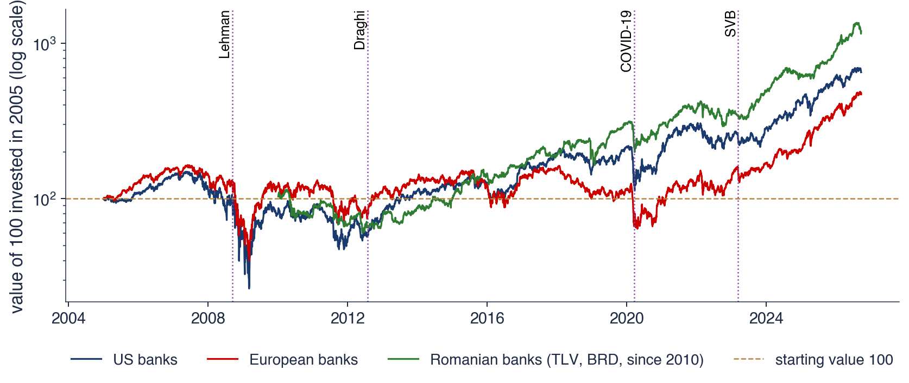

Academia de Studii Economice din București IDA Institute Digital Assets Blockchain Research Center AI4EFin Artificial Intelligence for Energy Finance Academia Română, Institutul de Prognoză Economică MSCA Digital Finance
Capitolul 10 a măsurat riscul unei singure poziții prin VaR (value at risk) 1% și ES (expected shortfall) 2,5%. Pentru o bancă, această măsură răspunde la întrebarea cît poate pierde banca însăși. Autoritățile de supraveghere au însă o altă grijă: cînd devine pierderea unei bănci o pierdere a întregului sistem financiar, cu credite care nu se mai acordă și plăți care nu se mai fac? Acesta este riscul sistemic (systemic risk), iar capitolul arată cum se măsoară el din prețurile de piață.
Datele capitolului sînt prețurile zilnice a 13 bănci listate, șase americane, cinci europene și două românești, din 2005 pînă în septembrie 2026. În ele se văd patru crize: falimentul Lehman Brothers din 2008, criza din zona euro din 2011–2012, martie 2020 și martie 2023. Portofoliul băncilor americane a pierdut 82% din valoare pînă în martie 2009, iar corelația medie dintre ele a urcat de la 0,59 în anii liniștiți la 0,94 în martie 2020: în crize, mai multe bănci se comportă aproape ca una singură.
Capitolul construiește apoi măsurile pe care le folosesc cercetătorii și băncile centrale: dependența în cozi, CoVaR și ΔCoVaR (conditional value at risk și contribuția la el), MES (marginal expected shortfall) și SRISK (systemic risk, deficitul de capital într-o criză), rețelele de cauzalitate Granger și conectivitatea Diebold–Yilmaz. Rezultatul principal este că ordonarea băncilor după propriul VaR 1% diferă de ordonarea după contribuția la riscul sistemului. Capitolul se încheie cu instrumentele macroprudențiale din Basel III și cu instituțiile care le aplică în Uniunea Europeană (UE) și în România.

Valoarea a 100 de unități investite în portofoliul cu ponderi egale al băncilor americane, europene și românești (acestea din urmă din 2010), pe scară logaritmică; liniile punctate marchează falimentul Lehman, discursul lui Draghi, începutul crizei COVID-19 (coronavirus disease 2019) și falimentul SVB (Silicon Valley Bank).
Ce veți putea face
Explicați canalele riscului sistemic și recunoașteți-le în crizele din 2008, 2011–2012, 2020 și 2023.
Estimați CoVaR 1% și ΔCoVaR prin regresie cuantilică liniară și interpretați-le alături de VaR 1%.
Calculați MES 5%, LRMES și SRISK și explicați rolul efectului de levier.
Distingeți contagiunea de interdependență prin corecția Forbes–Rigobon și interpretați o estimare a dependenței în cozi.
Interpretați o rețea de cauzalitate Granger și un tabel de conectivitate Diebold–Yilmaz.
Numiți instrumentele macroprudențiale din Basel III și instituțiile care le aplică în UE și în România.
Planul capitolului
Riscul sistemic: definiție și canaleDefiniția G-20, limitele VaR individual, contagiunea, vînzările forțate, retragerile de depozite și too big to fail.
Patru crize în datePortofoliile de bănci din 2005, Lehman, zona euro, martie 2020, SVB și Credit Suisse.
RezumatIdeile principale, formulele și întrebări de autoevaluare.
Riscul sistemic: definiție și canale
Secțiunea definește riscul sistemic și explică de ce VaR-ul calculat separat pentru fiecare bancă nu îl surprinde. Prezintă apoi cele trei canale prin care o problemă locală devine o problemă a sistemului: contagiunea directă, expunerile comune cu vînzările forțate și retragerea depozitelor. Se încheie cu problema băncilor prea mari pentru a fi lăsate să falimenteze și cu un tabel al măsurilor folosite în restul capitolului.
În 2009, la cererea G-20, IMF (International Monetary Fund, Fondul Monetar Internațional), BIS (Bank for International Settlements, Banca Reglementelor Internaționale) și FSB (Financial Stability Board, Consiliul pentru Stabilitate Financiară) au definit riscul sistemic ca riscul ca sistemul financiar în ansamblu să nu își mai îndeplinească funcțiile, adică creditarea, plățile și tranzacționarea, cu costuri mari pentru economia reală (IMF, BIS & FSB, 2009). Accentul cade pe funcții, nu pe instituții: falimentul unei bănci mici, ale cărei servicii sînt preluate imediat de alte bănci, nu este un eveniment sistemic.
Același raport propune trei criterii pentru a judeca dacă o instituție este importantă sistemic. Mărimea arată ce parte din serviciile sistemului oferă instituția. Substituibilitatea (substitutability) arată dacă alte instituții îi pot prelua rapid activitatea, de exemplu decontarea plăților sau creditarea unui anumit tip de clienți. Interconectarea (interconnectedness) arată pe cîte alte instituții le-ar trage în jos falimentul ei, prin expuneri directe sau prin încrederea pierdută.
Din definiție rezultă ideea care organizează capitolul: riscul sistemic este o proprietate a sistemului, nu a unui singur bilanț. O bancă poate părea sigură dacă este privită separat și totuși poate fi periculoasă pentru sistem, pentru că pierderile ei apar exact atunci cînd și celelalte bănci pierd. Măsurile din secțiunile următoare încearcă toate să surprindă această legătură dintre bancă și sistem.
Pe scurt
Riscul sistemic: riscul ca sistemul financiar în ansamblu să nu mai funcționeze (creditare, plăți, tranzacționare), cu costuri mari pentru economia reală IMF, BIS & FSB (2009)
definiția dată în 2009 pentru G-20 de IMF (International Monetary Fund, Fondul Monetar Internațional), BIS și FSB (Financial Stability Board, Consiliul pentru Stabilitate Financiară)
VaR 1% al unei bănci, definit în Capitolul 10, este pierderea acestei bănci depășită cu probabilitatea 1%. Măsura privește numai distribuția randamentelor băncii și nu spune nimic despre ce se întîmplă cu celelalte bănci în zilele în care această bancă are probleme. Două bănci cu același VaR 1% pot avea efecte complet diferite asupra sistemului: una pierde în zile în care restul pieței este liniștit, cealaltă pierde odată cu toată lumea.
O reglementare construită numai pe VaR-ul individual poate chiar amplifica riscul, printr-o eroare de compoziție (fallacy of composition). Dacă fiecare bancă vinde active riscante pentru a-și reduce propriul VaR, vînzările simultane coboară prețurile acelor active, iar pierderile din evaluarea la prețul pieței cresc riscul tuturor. Ce este prudent pentru o bancă luată separat devine destabilizator cînd toate băncile fac același lucru. De asemenea, o bancă mică, cu VaR mare, poate conta mai puțin pentru sistem decît o bancă mare și interconectată, cu VaR moderat.
Este nevoie, prin urmare, de măsuri condiționate, care leagă coada băncii de coada sistemului. Există două direcții. CoVaR măsoară coada sistemului dat fiind că banca este în dificultate (Adrian & Brunnermeier, 2016). MES și SRISK măsoară pierderea băncii dat fiind că piața se prăbușește; prima măsură a fost propusă de Acharya, Pedersen, Philippon & Richardson (2017) și a doua de Brownlees & Engle (2017). Capitolul le estimează pe amîndouă pe aceleași 13 bănci, iar diferența de direcție se va dovedi importantă.
Pe scurt
VaR 1% al unei bănci (Capitolul 10): pierderea acestei bănci, depășită cu probabilitatea 1%
ignoră ce se întîmplă cu celelalte bănci cînd această bancă are probleme
Eroarea de compoziție: dacă fiecare bancă vinde active riscante ca să-și reducă propriul VaR, prețurile scad pentru toate și riscul tuturor crește
o bancă mică, cu VaR mare, poate conta mai puțin decît o bancă mare și interconectată, cu VaR moderat
Avem nevoie de măsuri ale cozii sistemului condiționat de instituție sau ale instituției condiționat de coada sistemului
Contagiunea (contagion) înseamnă că falimentul unei instituții produce pierderi sau falimente la alte instituții. Canalul cel mai direct trece prin expunerile dintre bănci: credite interbancare, contracte derivate în care banca falimentară este contrapartidă, depozite ținute la alte bănci. Sistemul bancar este astfel o rețea de bilanțuri, iar o pierdere care șterge capitalul unei bănci se transmite creditorilor ei, apoi creditorilor acestora (Allen & Gale, 2000).
Structura rețelei contează. Allen & Gale (2000) și Haldane & May (2011) arată că legăturile multe au un efect dublu. Un șoc mic se împarte între multe contrapărți, fiecare pierde puțin, iar sistemul îl absoarbe. Un șoc mare se propagă însă de-a lungul acelorași legături către aproape toate instituțiile. Proprietatea se rezumă prin formula „robust, dar fragil” (robust yet fragile): același sistem rezistă bine la șocuri mici și cedează brusc la șocuri mari.
De aici vine ideea de instituție prea interconectată pentru a fi lăsată să falimenteze (too interconnected to fail). Problema nu este mărimea ei, ci numărul contrapărților care ar fi lovite simultan de falimentul ei. Pentru o astfel de instituție, autoritățile au un motiv să intervină chiar dacă bilanțul ei nu este foarte mare, iar această așteptare îi schimbă comportamentul înainte de criză.
Pe scurt
Contagiunea: falimentul unei instituții produce pierderi sau falimente la altele
expuneri directe: credite interbancare, instrumente derivate, depozite ținute la alte bănci
o rețea de bilanțuri: o pierdere se propagă de-a lungul legăturilor Allen & Gale (2000)
Al doilea canal nu are nevoie de nicio legătură directă între bănci. Expunerile comune (common exposures) apar cînd băncile dețin aceleași active, de exemplu credite ipotecare sau obligațiuni ale aceluiași stat. Un singur șoc asupra acelor active le lovește pe toate în aceeași zi. Corelația dintre bănci vine atunci din activele lor, nu din contractele dintre ele.
Vînzările forțate (fire sales) transformă pierderea inițială într-o spirală. O bancă ce trebuie să vîndă repede, pentru a acoperi pierderi sau retrageri de finanțare, vinde sub valoarea fundamentală, pentru că cumpărătorii naturali ai activului au la rîndul lor probleme (Shleifer & Vishny, 2011). Prețul mai mic este o pierdere pentru toți deținătorii activului care își evaluează pozițiile la prețul pieței. Brunnermeier & Pedersen (2009) descriu spirala lichidității (liquidity spiral): pierderile conduc la marje mai mari cerute de creditori, marjele mai mari conduc la noi vînzări, iar vînzările coboară din nou prețurile.
Efectul de levier (leverage) amplifică toate aceste mecanisme. O bancă ale cărei active sînt de 20 de ori mai mari decît capitalul propriu are capital egal cu 5% din active. O scădere de 5% a valorii activelor îi anulează așadar capitalul. Cu cît efectul de levier este mai mare, cu atît mai mică este scăderea de preț care declanșează vînzări forțate, iar această legătură revine în formula SRISK din secțiunea 5.
Pe scurt
Expunerile comune: băncile dețin aceleași active (credite ipotecare, obligațiuni de stat), astfel încît un singur șoc le lovește pe toate simultan
nu este nevoie de nicio legătură între bănci: corelația vine din active
Vînzările forțate (fire sales): o bancă ce trebuie să vîndă repede vinde sub valoarea fundamentală Shleifer & Vishny (2011)
prețul mai mic este o pierdere pentru toți deținătorii activului (evaluat la prețul pieței)
spirala lichidității: pierderi \(\to\) marje mai mari \(\to\) mai multe vînzări \(\to\) prețuri mai mici Brunnermeier & Pedersen (2009)
Efectul de levier amplifică totul: cu active de 20 de ori mai mari decît capitalul propriu, o scădere de 5% a valorii activelor anulează capitalul
Canalul 3: retragerea depozitelor și contagiunea informațională
Un bank run, adică retragerea masivă a depozitelor, apare cînd deponenții își retrag banii simultan de teamă că alții îi vor retrage primii (Diamond & Dybvig, 1983). Mecanismul ține de structura bilanțului bancar: banca deține credite pe termen lung, greu de vîndut, și datorează depozite pe termen scurt, care pot fi cerute oricînd. Ea nu poate plăti tuturor deponenților în același timp, chiar dacă activele ei valorează mai mult decît datoriile.
Modelul Diamond–Dybvig are două echilibre. Dacă fiecare deponent crede că ceilalți își vor păstra banii, nimeni nu are motiv să se retragă. Dacă fiecare crede că ceilalți se vor retrage, retragerea devine rațională pentru toți, iar banca, solvabilă la început, ajunge să vîndă active în pierdere. Garantarea depozitelor elimină motivul retragerii: deponentul garantat își primește banii oricum, deci nu mai are de ce să alerge la bancă.
Contagiunea informațională (information contagion) extinde acest mecanism la alte bănci. Problemele unei bănci îi fac pe investitori și pe deponenți să se îndoiască de băncile care seamănă cu ea, chiar fără nicio expunere directă. Fotografia de pe slide arată deponenți la coadă în fața unei sucursale Northern Rock, în septembrie 2007: a fost prima retragere masivă a depozitelor de la o bancă britanică din ultimul secol.
Pe scurt
Bank run (retragerea masivă a depozitelor): deponenții își retrag banii simultan, de teamă că alții îi vor retrage primii Diamond & Dybvig (1983)
o bancă deține credite pe termen lung, nelichide, și depozite pe termen scurt, lichide: nu poate plăti tuturor simultan
o retragere masivă poate lovi și o bancă solvabilă; garantarea depozitelor elimină motivul retragerii
Contagiunea informațională: problemele unei bănci îi fac pe investitori să se îndoiască de băncile similare
Northern Rock (Regatul Unit), septembrie 2007: prima retragere masivă a depozitelor de la o bancă britanică din ultimul secol
O bancă este too big to fail, adică prea mare pentru a fi lăsată să falimenteze, cînd falimentul ei ar afecta economia atît de mult încît statul preferă să o salveze. Dacă investitorii anticipează salvarea, creditorii băncii poartă un risc mai mic decît ar purta altfel și cer o dobîndă mai mică. Banca primește astfel o subvenție implicită, plătită de contribuabili prin garanția pe care o oferă statul.
Subvenția are o consecință previzibilă, hazardul moral (moral hazard). Cîștigurile din pozițiile riscante rămîn la acționari, iar o parte din pierderi este împărțită cu contribuabilii, deci banca are un motiv să își asume mai mult risc. Problema se întărește singură: cu cît banca crește, cu atît garanția implicită este mai credibilă și finanțarea mai ieftină.
După 2008, autoritățile au răspuns în două moduri. Băncile de importanță sistemică globală, G-SIB (global systemically important banks), sînt identificate într-o listă publicată anual și trebuie să dețină capital suplimentar, cu atît mai mult cu cît scorul lor de importanță este mai mare (BCBS, 2018). Planurile de rezoluție (resolution plans) trebuie să arate cum poate fi lichidată o bancă aflată în dificultate fără banii contribuabililor. Măsurile din datele de piață, precum CoVaR și SRISK, completează aceste reguli: permit ordonarea băncilor după importanța sistemică fără a aștepta un faliment.
Pe scurt
Too big to fail (prea mare pentru a fi lăsată să falimenteze): o bancă al cărei faliment ar afecta economia atît de mult încît statul o salvează
salvarea așteptată îi reduce costul de finanțare: o subvenție implicită
hazard moral: banca își asumă mai mult risc, deoarece pierderile sînt împărțite cu contribuabilii
G-SIB (global systemically important banks, bănci de importanță sistemică globală): o listă publicată anual, cu capital suplimentar pentru fiecare bancă
planuri de rezoluție: o bancă aflată în dificultate trebuie lichidată fără banii contribuabililor
Măsurile din datele de piață (CoVaR, SRISK) permit ordonarea băncilor fără a aștepta un faliment
Tabelul de pe slide leagă fiecare măsură de întrebarea la care răspunde. Corelația și dependența în cozi întreabă dacă băncile și piețele se prăbușesc împreună și se estimează din ranguri, adică din pseudo-observații, și dintr-o copula t. CoVaR și ΔCoVaR întreabă cu cît este mai rău sistemul cînd o bancă este în dificultate și se estimează prin regresie cuantilică. MES întreabă cît pierde banca în cele mai proaste zile ale pieței și este o medie condiționată.
SRISK întreabă cît capital i-ar lipsi băncii într-o criză și combină MES cu efectul de levier. Rețelele întreabă cine transmite șocuri și cui, prin teste de cauzalitate Granger și prin descompunerea varianței erorilor de prognoză. Fiecare măsură privește aceeași problemă dintr-un alt unghi, iar secțiunile 3–6 le estimează pe aceleași date.
Toate aceste măsuri folosesc doar prețuri de piață, deci sînt disponibile zilnic pentru orice bancă listată, fără a aștepta raportările contabile. Punctul lor slab este același: prețurile pot fi liniștite în timp ce riscul se acumulează, cum s-a întîmplat în 2006–2007, cînd volatilitatea mică făcea ca toate măsurile bazate pe randamente să arate un risc redus chiar înaintea celei mai mari crize din eșantion.
Pe scurt
Măsura
Întrebarea
Instrumentul
corelația, dependența în cozi
se prăbușesc băncile și piețele împreună?
pseudo-observații, copula t
CoVaR, \(\Delta\)CoVaR
cu cît este mai rău sistemul cînd banca este în dificultate?
regresia cuantilică
MES
cît pierde banca în cele mai proaste zile ale pieței?
medie condiționată
SRISK
cît capital i-ar lipsi băncii într-o criză?
MES, efectul de levier
rețele
cine transmite șocuri și cui?
teste Granger, descompunerea varianței
Toate măsurile folosesc doar prețurile de piață: sînt disponibile zilnic, pentru orice bancă listată
Punctul lor slab: prețurile de piață pot fi liniștite în timp ce riscul se acumulează (2006–2007)
Sinteza secțiunii
Riscul sistemic este riscul ca sistemul financiar să nu-și mai îndeplinească funcțiile. El apare prin contagiune directă, prin expuneri comune și vînzări forțate amplificate de efectul de levier și prin retrageri de depozite, iar VaR-ul individual nu îl vede. Măsurile capitolului leagă coada băncii de coada sistemului, în cele două direcții de condiționare. Secțiunea următoare arată cum arată aceste mecanisme în datele celor patru crize.
Patru crize în date
Secțiunea descrie datele capitolului și urmărește portofoliile de bănci americane, europene și românești din 2005 pînă în 2026. Patru episoade sînt analizate pe rînd: falimentul Lehman Brothers, criza din zona euro, goana după lichiditate din martie 2020 și criza bancară din martie 2023, cu Silicon Valley Bank și Credit Suisse. Se încheie cu o comparație a celor patru episoade pe același grafic.
Eșantionul cuprinde trei grupuri de bănci, fiecare cu un indice de piață care joacă rolul sistemului sau al pieței. Băncile americane sînt JPMorgan Chase, Bank of America, Citigroup, Goldman Sachs, Morgan Stanley și Wells Fargo, cu S&P 500 ca indice. Băncile europene sînt Deutsche Bank, BNP Paribas, Santander, ING și HSBC, cu Euro Stoxx 50. Băncile românești sînt Banca Transilvania (TLV) și BRD, cu BET (Bucharest Exchange Trading), indicele de referință al Bursei de Valori București (BVB). Indicele de volatilitate VIX (CBOE Volatility Index) servește ca indicator al stresului din piață.
Datele sînt prețurile de închidere ajustate zilnice ale băncilor și închiderile indicilor, de la furnizorul EODHD (EOD Historical Data), din ianuarie 2005 pînă pe 18 septembrie 2026. Prețurile seriilor comparate se aliniază întîi pe zilele în care toate au cotații, iar abia apoi se calculează randamentele logaritmice zilnice în procente, \(r_t = 100(\ln P_t - \ln P_{t-1})\). Ordinea contează: un randament calculat înainte de aliniere ar putea acoperi două zile pentru o serie și una pentru cealaltă.
Băncile BVB intră în eșantion din 2010, pentru că înainte multe zile nu au tranzacții. Din seria TLV sînt eliminate zilele de 30–31 mai 2016, în care o ajustare de preț a fost aplicată cu o zi mai tîrziu, problemă discutată în Capitolul 2. Pentru fiecare grup se construiește un portofoliu de bănci cu ponderi egale, reechilibrat zilnic.
Pe scurt
Grupul
Băncile
Indicele de piață
Bănci americane
JPMorgan Chase, Bank of America, Citigroup, Goldman Sachs, Morgan Stanley, Wells Fargo
S&P 500
Bănci europene
Deutsche Bank, BNP Paribas, Santander, ING, HSBC
Euro Stoxx 50
Bănci românești
Banca Transilvania (TLV), BRD (din 2010)
BET
Prețuri de închidere ajustate zilnice ale băncilor și închiderile indicilor, de la EODHD, ianuarie 2005 – 18 septembrie 2026; VIX ca indicator de stres
Prețurile se aliniază întîi pe zilele comune, apoi se calculează randamentele logaritmice zilnice în %: \(r_t = 100(\ln P_t - \ln P_{t-1})\)
Băncile BVB din 2010: înainte, multe zile nu au tranzacții; TLV fără 30–31 mai 2016 (o ajustare de preț aplicată cu o zi mai tîrziu, Capitolul 2)
Portofoliul de bănci al unui grup: ponderi egale, reechilibrate zilnic
Întrebare pentru sală ▶ mută investiția celor 100 de unități la începutul lui 2010 (rulare suplimentară). Cît este drawdown-ul maxim al portofoliului băncilor americane?
Răspuns
−51%, pe 23 noiembrie 2011, față de −82% cu investiția din 2005: minimul din martie 2009 nu mai este în eșantion. Drawdown-ul maxim depinde de începutul eșantionului; pentru băncile europene, cel mai adînc punct după 2010 este 21 aprilie 2020 (−61%).
Graficul arată, pe scară logaritmică, valoarea a 100 de unități investite în fiecare dintre cele trei portofolii cu ponderi egale: băncile americane și europene din 2005, cele românești din 2010. Pe o scară logaritmică, distanțele verticale egale corespund unor variații procentuale egale, astfel încît scăderile din 2008 și din 2020 pot fi comparate direct. Liniile verticale punctate marchează falimentul Lehman, discursul lui Draghi din iulie 2012, începutul crizei COVID-19 și falimentul SVB; o linie orizontală marchează nivelul inițial 100.
Măsura pierderii este drawdown-ul maxim, cea mai mare scădere de la un maxim anterior la un minim ulterior. Portofoliul băncilor americane are un drawdown maxim de −82%, atins pe 6 martie 2009, iar cel al băncilor europene de −76%, pe 9 martie 2009. Portofoliul băncilor românești are un drawdown maxim de −47%, atins mai tîrziu, pe 5 iunie 2012, în timpul crizei din zona euro.
La sfîrșitul eșantionului, toate cele trei portofolii se află peste valoarea inițială, iar cel românesc este cel mai sus. Drumul pînă acolo a fost însă foarte diferit: portofoliul european a petrecut mulți ani sub nivelul inițial, iar cel american a trebuit să recupereze o pierdere de patru cincimi.
Pe scurt
Valoarea a 100 de unități investite în fiecare portofoliu cu ponderi egale (scară logaritmică); linii punctate: Lehman, discursul lui Draghi, COVID-19, falimentul SVB
Drawdown maxim: băncile americane \(-82\%\) (6 martie 2009), băncile europene \(-76\%\) (9 martie 2009), băncile românești \(-47\%\) (5 iunie 2012)
În 2008–2009, băncile americane și europene au pierdut aproximativ patru cincimi din valoare. Minimul nu a venit în ziua falimentului Lehman, ci în martie 2009, la aproape șase luni după. O criză sistemică este un proces care se desfășoară pe luni: pierderile se descoperă treptat, finanțarea se retrage, vînzările forțate continuă. O măsură a riscului care privește o singură zi proastă surprinde doar începutul acestui proces.
Băncile europene au rămas sub nivelul din 2005 în cea mai mare parte a perioadei. După 2009 au urmat criza datoriilor suverane din zona euro și o lungă perioadă de dobînzi scăzute. Băncile românești au avut cea mai mare scădere în criza din zona euro din 2011–2012, nu în 2008: băncile-mamă ale multor bănci din România sînt în zona euro, iar îndoielile privind acestea s-au transmis piețelor locale.
Episoadele din martie 2020 și martie 2023 arată altfel. Scăderile au fost abrupte, dar scurte, pentru că băncile centrale și guvernele au reacționat în cîteva zile. Diferența față de 2008 ține atît de capitalul mai mare al băncilor, cît și de rapiditatea intervenției publice.
Pe scurt
2008–2009: băncile americane și europene au pierdut aproximativ patru cincimi din valoare; minimul a venit în martie 2009, la șase luni după Lehman
o criză sistemică este un proces care durează luni, nu o singură zi proastă
Băncile europene au rămas sub nivelul din 2005 în cea mai mare parte a perioadei: criza din zona euro și dobînzile scăzute
Băncile românești: cea mai mare scădere a venit în criza din zona euro din 2011–2012 (băncile-mamă ale multor bănci din România sînt în zona euro)
Martie 2020 și martie 2023: scăderi abrupte, dar scurte; băncile centrale și guvernele au reacționat în cîteva zile
Pe 15 septembrie 2008, Lehman Brothers a intrat în faliment, cel mai mare faliment din istoria Statelor Unite, cu active de peste 600 de miliarde USD. A doua zi, Rezerva Federală a salvat AIG (American International Group), un asigurător care vînduse multor bănci protecție împotriva neplății datoriilor ipotecare. În aceeași zi, valoarea unei unități a unui fond monetar care deținea titluri Lehman a scăzut sub un dolar, iar investitorii au început să își retragă banii din fondurile de acest tip, o sursă importantă de finanțare pe termen scurt pentru bănci.
Episodul ilustrează toate cele trei canale ale secțiunii precedente în același timp. Expunerile directe au apărut prin contractele derivate cu Lehman, al căror rezultat era incert. Expunerile comune au apărut prin creditele ipotecare americane deținute de bănci de pe ambele maluri ale Atlanticului. Retragerea finanțării pe termen scurt a funcționat ca un bank run în afara depozitelor clasice.
De la sfîrșitul lui august pînă la minimul din noiembrie 2008, portofoliul băncilor americane a scăzut cu 59%, cel al băncilor europene cu 54%, iar S&P 500 cu 41%. Băncile au pierdut mai mult decît piața în ansamblu, semn că ele erau sursa crizei, nu doar victimele ei.
Pe scurt
15 septembrie 2008: Lehman Brothers intră în faliment, cel mai mare faliment din istoria SUA (active de peste 600 de miliarde USD)
16 septembrie: AIG, un asigurător care vînduse multor bănci protecție pentru datoriile ipotecare, este salvat de Rezerva Federală
în aceeași zi, un fond monetar cu titluri Lehman scade sub un dolar pe unitate, iar investitorii își retrag banii din astfel de fonduri
Toate cele trei canale simultan
expuneri directe (derivate cu Lehman), expuneri comune (credite ipotecare), retragerea finanțării pe termen scurt
De la sfîrșitul lui august pînă la minimul din noiembrie: băncile americane \(-59\%\), cele europene \(-54\%\), S&P 500 \(-41\%\)
Criza din zona euro a pornit în 2010 din Grecia și s-a extins la Irlanda, Portugalia, Spania și Italia, prin îndoieli privind sustenabilitatea datoriei publice. Mecanismul central a fost bucla bănci–stat (bank–sovereign loop). Băncile dețin multe obligațiuni ale propriului stat, iar statul garantează implicit băncile. O scădere a prețului obligațiunilor slăbește capitalul băncilor; salvarea băncilor crește datoria statului și scade din nou prețul obligațiunilor.
Spirala a fost oprită pe 26 iulie 2012 de o declarație. Mario Draghi, președintele ECB (European Central Bank, Banca Centrală Europeană), a spus la Londra că Banca Centrală Europeană este pregătită să facă tot ce este necesar pentru a păstra moneda euro (Draghi, 2012). Declarația nu a fost însoțită în acel moment de cumpărări de obligațiuni; a contat schimbarea așteptărilor investitorilor despre ce ar face banca centrală în cazul unei noi scăderi.
În fereastra iulie 2011 – septembrie 2012, la punctul cel mai slab, portofoliul băncilor europene a pierdut 41%, cel al băncilor americane 37%, iar cel al băncilor românești 34%. Faptul că și băncile americane au scăzut puternic arată cît de legat era sistemul bancar global de soarta zonei euro.
Pe scurt
Grecia (2010), apoi Irlanda, Portugalia, Spania și Italia: îndoieli privind datoria publică
bucla bănci–stat: băncile dețin obligațiunile propriului stat, iar statul garantează băncile
o scădere a prețului obligațiunilor slăbește băncile; salvarea băncilor slăbește statul
26 iulie 2012: Mario Draghi, președintele ECB (European Central Bank, Banca Centrală Europeană): „Banca Centrală Europeană este pregătită să facă tot ce este necesar pentru a păstra moneda euro” Draghi (2012)
o promisiune, nu o cumpărare, a oprit spirala: rolul așteptărilor
Iulie 2011 – septembrie 2012, punctul cel mai slab: băncile europene \(-41\%\), cele americane \(-37\%\), cele românești \(-34\%\)
În martie 2020, restricțiile impuse de pandemia COVID-19 au făcut ca firmele, fondurile și investitorii să vrea lichiditate în același timp. Episodul este cunoscut ca goana după lichiditate (dash for cash): s-au vîndut nu doar acțiuni, ci chiar și obligațiuni de stat, considerate de obicei refugiul investitorilor. Stresul a pornit din afara băncilor, din fonduri, din firmele care și-au pierdut veniturile și din piața obligațiunilor.
Băncile erau mai bine capitalizate decît în 2008, datorită regulilor Basel III, și au devenit parte a soluției: firmele au tras pe liniile de credit pe care le aveau deja la bănci, iar băncile le-au putut onora. Autoritățile au reacționat rapid. Băncile centrale au cumpărat active, iar Rezerva Federală a împrumutat dolari altor bănci centrale, pentru ca băncile din afara Statelor Unite să își poată finanța pozițiile în dolari.
La minimul din 23 martie 2020, portofoliul băncilor americane pierduse 48%, cel al băncilor europene tot 48%, cel al băncilor românești 35%, iar S&P 500 34%. Imaginea districtului financiar din New York, gol pe 25 martie 2020, rezumă natura episodului: un șoc venit din economia reală, nu din bilanțurile bancare.
Pe scurt
Restricțiile COVID-19: toată lumea a vrut lichiditate în același timp; s-au vîndut chiar și obligațiunile de stat
stresul a pornit din afara băncilor: fonduri, firme, piața obligațiunilor
băncile erau mai bine capitalizate decît în 2008 (Basel III) și au devenit parte a soluției (liniile de credit)
Răspuns rapid al autorităților: băncile centrale au cumpărat active și au împrumutat dolari altor bănci centrale
minimul pe 23 martie 2020: băncile americane \(-48\%\), cele europene \(-48\%\), cele românești \(-35\%\), S&P 500 \(-34\%\)
SVB avea un model de afaceri neobișnuit. Depozitele veneau mai ales de la firme de tehnologie, iar majoritatea depășeau plafonul garantat de stat. Banca le-a investit în mare parte în obligațiuni pe termen lung. Creșterea dobînzilor din 2022 a scăzut prețul acestor obligațiuni și a produs pierderi mari nerealizate, care ar fi devenit reale dacă banca ar fi trebuit să vîndă.
Pe 9 martie 2023, deponenții au încercat să retragă aproximativ 42 de miliarde USD într-o singură zi, iar pe 10 martie banca a fost închisă (Federal Reserve, 2023; FDIC, 2023). A fost o retragere masivă în epoca aplicațiilor bancare, mai rapidă decît oricare alta înainte: deponenții negarantați, bine informați și conectați între ei, au putut acționa în cîteva ore.
SVB era o bancă de mărime medie, care nu figura printre instituțiile considerate sistemice. A devenit sistemică prin contagiune informațională: investitorii au căutat bănci cu aceleași slăbiciuni, depozite negarantate și pierderi nerealizate pe obligațiuni, iar alte bănci regionale americane au scăzut puternic în zilele următoare.
Pe scurt
SVB (Silicon Valley Bank): depozite ale firmelor de tehnologie, majoritatea peste plafonul garantat, investite în obligațiuni pe termen lung
creșterea dobînzilor din 2022 a produs pierderi mari nerealizate pe obligațiuni
9 martie 2023: deponenții au încercat să retragă aproximativ 42 de miliarde USD într-o singură zi; 10 martie: banca este închisă Federal Reserve (2023); FDIC (2023)
O retragere masivă în epoca aplicațiilor bancare: mai rapidă decît oricare alta înainte
o bancă de mărime medie a devenit sistemică prin contagiune informațională: alte bănci regionale au scăzut în zilele următoare
Credit Suisse era o bancă G-SIB care pierdea de ani de zile clienți și bani, după scandaluri și pierderi mari cu clienți de tip hedge fund. După falimentul SVB, investitorii și deponenții săi au plecat repede, iar banca a ajuns la marginea falimentului în cîteva zile. Episodul arată că o bancă slăbită este cea mai expusă la contagiunea informațională venită de la o altă bancă, chiar fără legături directe între ele.
Pe 19 martie 2023, Credit Suisse a fost preluată de UBS, cu aprobarea autorității elvețiene de supraveghere FINMA (Eidgenössische Finanzmarktaufsicht) (FINMA, 2023). Obligațiunile AT1 (additional tier 1, capital suplimentar de nivel 1), de aproximativ 16 miliarde CHF, au fost anulate. Aceste instrumente sînt construite tocmai pentru a absorbi pierderi, iar anularea lor a arătat că pot face acest lucru în practică.
Soluția a fost totuși o salvare prin fuziune, nu o rezoluție de tipul celei promise după 2008: problema too big to fail nu dispăruse. De la sfîrșitul lui februarie pînă la minim, portofoliul băncilor europene a pierdut 21%, cel al băncilor americane 16%, iar cel al băncilor românești 7%.
Pe scurt
Credit Suisse: o bancă G-SIB care pierdea de ani de zile clienți și bani (scandaluri, pierderi cu clienți de tip hedge fund)
după SVB, investitorii și deponenții au plecat repede
19 martie 2023: preluarea de către UBS, aprobată de autoritatea elvețiană de supraveghere FINMA FINMA (2023)
obligațiunile AT1 (additional tier 1, capital suplimentar de nivel 1) de aproximativ 16 miliarde CHF au fost anulate
o salvare prin fuziune, nu o rezoluție: problema too big to fail nu dispăruse
De la sfîrșitul lui februarie pînă la minim: băncile europene \(-21\%\), cele americane \(-16\%\), cele românești \(-7\%\)
Întrebare pentru sală ▶ mută începutul fiecărei ferestre cu 30 de zile mai tîrziu (rulare suplimentară). Ce devine minimul băncilor americane în episodul din martie 2020?
Răspuns
−10,8% în loc de −47,6%: fereastra începe pe 15 martie 2020, după cea mai mare parte a scăderii, iar la final portofoliul are +16,9%. Randamentul cumulat se măsoară de la începutul ferestrei, deci comparația dintre episoade depinde de această dată.
Graficul are patru panouri, cîte unul pentru fiecare criză: Lehman în 2008 (septembrie–decembrie), zona euro (iulie 2011 – septembrie 2012), martie 2020 și martie 2023. În fiecare panou, axa verticală arată randamentul cumulat în procente de la începutul ferestrei, pentru portofoliul băncilor americane, cel al băncilor europene, S&P 500 și, de la criza din zona euro încolo, portofoliul băncilor românești.
Comparația separă crizele bancare de celelalte. În 2008 și în 2011–2012, băncile au scăzut mult mai mult decît S&P 500: băncile erau problema. În martie 2020, băncile au scăzut odată cu piața, pentru că șocul a venit din afara sistemului bancar. În martie 2023, băncile au scăzut în timp ce S&P 500 creștea: o criză limitată la sectorul bancar, care nu a contaminat restul pieței.
Diferența are consecințe pentru măsurare. O măsură care compară banca cu piața va vedea în 2008 și în 2023 bănci care se mișcă mai rău decît piața, iar în 2020 bănci care se mișcă împreună cu piața. Secțiunile următoare transformă aceste observații în măsuri.
Pe scurt
Randamentul cumulat de la începutul fiecărei ferestre; băncile românești intră în date în 2010
Interpretare: în 2008 și 2011–2012 băncile au scăzut mult mai mult decît S&P 500 (băncile erau problema); în 2020 au scăzut odată cu piața; în 2023 au scăzut în timp ce piața creștea
Cele patru crize arată toate canalele riscului sistemic: expuneri directe și comune în 2008, bucla bănci–stat în zona euro, un șoc de lichiditate venit din afara băncilor în 2020 și contagiunea informațională în 2023. Băncile americane și europene au pierdut în 2008–2009 aproximativ patru cincimi din valoare, cu minimul la șase luni după Lehman, iar intervențiile rapide din 2020 și 2023 au scurtat scăderile. Secțiunea următoare măsoară cît de mult se mișcă băncile împreună în aceste perioade.
Corelația și dependența în cozi în crize
Secțiunea măsoară cît de mult se mișcă băncile împreună și cum se schimbă această mișcare comună în crize. Pornește de la corelațiile mobile, arată de ce o corelație mai mare nu dovedește contagiunea (corecția Forbes–Rigobon) și trece apoi la dependența în cozi, care privește doar zilele proaste, estimată empiric și dintr-o copula t.
Media corelației medii dintre perechile de bănci, pe perioade (cifrele de pe slide-ul precedent)
Întrebare pentru sală ▶ trece prin anii 2005–2026. În ce an este cea mai mare media anuală a corelației dintre TLV și BRD?
Răspuns
În 2019: 0,80, peste 2020 (0,76) și peste 2011 (0,56). Corelația pe 120 de zile a două acțiuni este zgomotoasă și poate atinge maximul într-un an liniștit, cum arată și maximul zilnic din 9 mai 2019.
Întrebare pentru sală ▶ alege criza din martie 2020 (rulare suplimentară). Depășește corelația corectată ρ* corelația din perioada calmă, 0,40?
Răspuns
Nu: ρ_criză = 0,74, dar varianța portofoliului american crește de 47 de ori (δ = 46,0), deci ρ* = 0,74/√(1 + 46,0 × 0,451) = 0,16. Dintre cele patru ferestre, doar martie 2023 dă ρ* = 0,42, puțin peste 0,40, pentru că volatilitatea a crescut puțin (δ = 3,7).
Întrebare pentru sală Cu o fereastră de 60 de zile (▶, rulare suplimentară), unde ajunge maximul corelației dintre TLV și BRD?
Răspuns
La 0,96, pe 6 februarie 2019, tot în afara unei crize (cu 120 de zile: 0,93 pe 9 mai 2019). Pentru o singură pereche de acțiuni, o fereastră scurtă dă valori extreme mai mari; maximul băncilor americane rămîne pe 16 martie 2020 (0,95).
Graficul arată, pentru fiecare grup de bănci, media corelațiilor dintre perechile de bănci, calculate pe randamente zilnice în ferestre mobile de 120 de zile. Axa verticală merge de la 0 la 1, iar liniile punctate marchează aceleași patru evenimente ca în secțiunea precedentă. Pentru băncile românești, media este simplă corelația dintre TLV și BRD.
Pentru băncile americane, corelația medie a fost de 0,59 înainte de criză, între iulie 2005 și iunie 2007, și a atins maximul de 0,94 pe 16 martie 2020. Pentru băncile românești, variația este și mai mare: corelația dintre TLV și BRD era de 0,31 în 2017 și a urcat la 0,85 în aprilie–iunie 2020. Seria românească este și cea mai instabilă dintre cele trei, cu urcări și coborîri ample de la un an la altul: maximul ei, 0,93 pe 9 mai 2019, apare în afara oricărei crize.
Corelația mobilă (rolling correlation) arată că legătura dintre bănci nu este constantă. În anii liniștiți, fiecare bancă răspunde în parte propriilor știri; într-o criză, același factor comun domină randamentele tuturor.
Pe scurt
Media corelațiilor dintre perechile de bănci, pe randamente zilnice, în fiecare grup, pe ferestre de 120 de zile
Băncile americane: \(0{,}59\) înainte de criză (iulie 2005 – iunie 2007), pînă la \(0{,}94\) (16 martie 2020); TLV și BRD: \(0{,}31\) în 2017, \(0{,}85\) în aprilie–iunie 2020, maximul \(0{,}93\) (9 mai 2019)
Cînd corelația medie se apropie de 1, un portofoliu format din mai multe bănci se comportă aproape ca o singură bancă. Beneficiul diversificării, care se sprijină pe faptul că pierderile unei bănci sînt compensate de cîștigurile alteia, dispare exact în perioada în care ar fi cel mai util. Cauza este factorul comun: piața în ansamblu și stresul de finanțare domină știrile specifice fiecărei bănci.
Cazul celor două bănci românești este cel mai clar, cu o rezervă: seria atinge maximul, 0,93, pe 9 mai 2019, în afara oricărei crize, deci pentru două acțiuni un singur vîrf spune puțin. În anii liniștiți, acțiunile de pe BVB sînt determinate de știrile proprii ale fiecărei companii și de lichiditatea redusă: zilele fără tranzacții importante sau cu volume mici adaugă zgomot independent în fiecare serie și coboară corelația. Într-o criză, șocul comun este suficient de mare pentru a acoperi acest zgomot, iar corelația urcă brusc.
Două precauții sînt necesare. O corelație estimată pe 120 de zile are o eroare de estimare mare, deci variațiile mici ale liniei nu trebuie interpretate; cu doar două acțiuni, ca în cazul TLV și BRD, chiar și un vîrf poate apărea într-un an liniștit. Iar o creștere a corelației nu dovedește, singură, că legătura dintre bănci s-a întărit: ea poate apărea și numai pentru că volatilitatea a crescut, cum arată slide-ul următor.
Pe scurt
În crize, băncile se mișcă împreună: un portofoliu de mai multe bănci este aproape o singură bancă
factorul comun (piața, stresul de finanțare) domină știrile specifice fiecărei bănci
Cele două bănci românești: corelație mică în 2017, foarte mare în 2020; maximul (9 mai 2019) apare în afara oricărei crize
în anii liniștiți, acțiunile BVB sînt determinate de propriile știri și de lichiditatea redusă; într-o criză, de șocul comun
Atenție: o corelație pe 120 de zile este zgomotoasă (pentru două acțiuni, poate atinge maximul într-un an liniștit), iar o creștere a corelației nu dovedește contagiunea (slide-ul următor)
Contagiune sau interdependență? Forbes și Rigobon (1/2)
Forbes & Rigobon (2002) pornesc de la un model simplu, \(y = \beta x + e\), în care \(x\) este randamentul pieței-sursă, \(y\) randamentul celeilalte piețe, \(\beta\) intensitatea legăturii, iar \(e\) un șoc al lui \(y\) fără legătură cu \(x\). Corelația dintre \(x\) și \(y\) este \(\rho = \beta\sigma_x/\sqrt{\beta^2\sigma_x^2 + \sigma_e^2}\). Dacă varianța lui \(x\) crește, iar \(\beta\) și \(\sigma_e\) rămîn aceleași, corelația crește automat, pentru că partea comună a lui \(y\) devine mai mare relativ la zgomotul propriu.
O corelație mai mare într-o criză poate fi deci aceeași legătură, văzută într-o perioadă mai volatilă. Forbes și Rigobon numesc acest caz interdependență (interdependence). Contagiunea, în sensul lor, înseamnă că legătura însăși, \(\beta\), devine mai puternică în criză. Pentru a separa cele două cazuri, corelația din criză se recalculează la volatilitatea din perioada calmă:
În (15.1),\(\rho\) este corelația măsurată în criză, \(\sigma^2\) este varianța pieței-sursă în fiecare perioadă, iar \(\delta\) este creșterea relativă a acestei varianțe. Corelația corectată \(\rho^*\) se compară cu corelația din perioada calmă, \(\rho_{\text{calm}}\): dacă \(\rho^* > \rho_{\text{calm}}\), legătura s-a întărit și datele indică o contagiune; altfel, creșterea corelației se explică prin volatilitate.
Pe scurt
Dacă \(y = \beta x + e\) cu \(\beta\) fix, corelația dintre \(x\) și \(y\) crește automat cînd crește varianța lui \(x\)Forbes & Rigobon (2002)
\(x\): randamentul pieței-sursă; \(y\): randamentul celeilalte piețe; \(\beta\): intensitatea legăturii; \(e\): un șoc al lui \(y\) fără legătură cu \(x\)
o corelație mai mare într-o criză poate fi aceeași legătură, văzută într-o perioadă mai volatilă: interdependență
Exemplul aplică corecția portofoliului băncilor americane, ca sursă, și portofoliului băncilor europene. Perioada calmă este ianuarie 2005 – iunie 2007, cu 506 zile, iar criza este 15 septembrie – 31 decembrie 2008, cu 72 de zile. Corelația crește de la 0,40 în perioada calmă la 0,60 în criză, o creștere care, privită singură, ar sugera o contagiune.
Varianța zilnică a portofoliului american a crescut însă de la 0,89 la 75,4, deci \(\delta = 83{,}7\). Cu \(1 - \rho^2 = 0{,}638\), corelația corectată este \(\rho^* = 0{,}60/\sqrt{1 + 83{,}7 \times 0{,}638} = 0{,}60/\sqrt{54{,}4} = 0{,}08\). După corecție, corelația din criză nu mai este mai mare decît cea din perioada calmă, ci mult mai mică.
Interpretarea este că datele sînt compatibile cu interdependența, nu cu o legătură mai puternică între băncile americane și cele europene. Concluzia trebuie citită cu grijă: corecția presupune modelul liniar de mai sus și un șoc propriu \(e\) cu aceeași varianță în ambele perioade. Ea arată însă cît de mult poate exagera o comparație naivă a corelațiilor atunci cînd volatilitatea crește de aproape 85 de ori.
Pe scurt
Exemplu rezolvat
Portofoliul băncilor americane (sursa) și cel al băncilor europene: perioada calmă ianuarie 2005 – iunie 2007 (\(n = 506\)), criza 15 septembrie – 31 decembrie 2008 (\(n = 72\))
Corelația descrie întreaga distribuție comună, inclusiv zilele obișnuite. Pentru riscul sistemic contează însă zilele proaste, iar acestea se studiază mai bine prin pseudo-observații (pseudo-observations). Pentru fiecare serie, randamentul unei zile se înlocuiește cu rangul său între cele \(n\) randamente ale seriei, împărțit la \(n + 1\):\(U = \text{rang}/(n + 1)\). Valorile lui \(U\) sînt în intervalul \((0, 1)\), iar \(U \le 0{,}05\) înseamnă că ziua este una dintre cele mai proaste 5% dintre zilele seriei. Distribuțiile marginale nu mai contează: rămîne doar structura de dependență, adică copula din Capitolul 10.
Dependența în coada inferioară (lower tail dependence) la nivelul \(q\) este probabilitatea condiționată
\[\lambda(q) = P(U_1 \le q \mid U_2 \le q),\]
(15.2)
unde \(U_1\) este pseudo-observația băncii, iar \(U_2\) cea a pieței. \(\lambda(q)\) este probabilitatea ca banca să fie în cele mai proaste \(q\) dintre zilele ei, dat fiind că piața este în cele mai proaste \(q\) dintre zilele ei. Dacă banca și piața ar fi independente, \(\lambda(q) = q\); dacă s-ar mișca perfect împreună, \(\lambda(q) = 1\).
Limita \(\lambda_L = \lim_{q \to 0}\lambda(q)\) este coeficientul de dependență în coadă (tail dependence coefficient). El spune dacă prăbușirile extreme ale celor două serii tind să apară împreună chiar și la nivelurile cele mai îndepărtate ale cozii. Pentru riscul sistemic, această măsură este mai relevantă decît corelația: ea spune cît de des sînt o bancă și piața împreună în cele mai proaste zile ale lor.
Pe scurt
Pseudo-observațiile: \(U = \text{rang}/(n + 1)\), rangul unui randament între cele \(n\) randamente ale seriei, scalat în \((0, 1)\)
\(U \le 0{,}05\): una dintre cele mai proaste 5% dintre zilele seriei; distribuțiile marginale nu mai contează
Dependența în lower tail la nivelul \(q\): \(\lambda(q) = P(U_1 \le q \mid U_2 \le q)\)
\(U_1\): banca; \(U_2\): piața; \(\lambda(q)\): probabilitatea ca banca să fie în cele mai proaste \(q\) zile ale ei, dat fiind că piața este în cele mai proaste \(q\) zile
la independență, \(\lambda(q) = q\); limita \(\lambda_L = \lim_{q \to 0}\lambda(q)\) este coeficientul de dependență în coadă
Pentru riscul sistemic: dependența în cozi măsoară cît de des sînt o bancă și piața împreună în cele mai proaste zile ale lor
Limita \(\lambda_L\) nu poate fi estimată direct din date, pentru că la \(q\) foarte mic rămîn prea puține zile. Ea se obține dintr-o copula parametrică. Copula Gaussiană are \(\lambda_L = 0\) pentru orice corelație mai mică decît 1: prăbușirile extreme devin, la limită, independente. Copula t are, în schimb, un coeficient de dependență în coadă pozitiv (Demarta & McNeil, 2005):
În (15.3),\(t_{\nu+1}\) este funcția de repartiție (distribution function) a distribuției Student-t cu \(\nu + 1\) grade de libertate, \(\rho\) este parametrul de corelație al copulei, iar \(\nu\) gradele ei de libertate. Coeficientul crește cînd \(\rho\) crește și cînd \(\nu\) scade: un \(\nu\) mic înseamnă prăbușiri simultane puternice, iar cînd \(\nu \to \infty\) copula t devine Gaussiană și \(\lambda_L \to 0\).
Estimarea are doi pași. Parametrul \(\rho\) se obține din \(\tau\) al lui Kendall, o corelație a rangurilor, prin relația \(\rho = \sin(\pi\tau/2)\);\(\tau = (C - D)/\binom{n}{2}\), unde \(C\) și \(D\) sînt numerele perechilor de zile concordante și discordante, adică perechile în care cele două serii se mișcă în același sens, respectiv în sensuri opuse. Gradele de libertate \(\nu\) se estimează apoi prin verosimilitate maximă, cu \(\rho\) fixat.
\(t_{\nu+1}\): funcția de repartiție a distribuției Student-t cu \(\nu + 1\) grade de libertate
\(\rho\): parametrul de corelație al copulei; \(\nu\): gradele ei de libertate; un \(\nu\) mic înseamnă prăbușiri simultane puternice
Estimarea
\(\rho = \sin(\pi\tau/2)\) din \(\tau\) al lui Kendall, o corelație a rangurilor; \(\nu\) prin verosimilitate maximă
\(\tau = (C - D)/\binom{n}{2}\); \(C\), \(D\): numărul perechilor de zile concordante și discordante (cele două serii se mișcă în același sens sau în sensuri opuse)
Tabelul aplică aceste estimări pentru patru perechi. Pentru portofoliul băncilor americane și S&P 500, cu 5 229 de zile, corelația este 0,79, \(\lambda(5\%) = 0{,}64\) și \(\lambda(1\%) = 0{,}63\), iar copula t dă \(\hat\nu = 3{,}2\) și \(\lambda_L = 0{,}49\). Pentru băncile europene și Euro Stoxx 50, valorile sînt și mai mari: corelația 0,86, \(\lambda(5\%) = 0{,}72\),\(\lambda(1\%) = 0{,}67\),\(\hat\nu = 3{,}1\) și \(\lambda_L = 0{,}59\). Pentru băncile românești și BET, cu 3 414 zile, corelația este 0,86, \(\lambda(5\%) = 0{,}65\),\(\lambda(1\%) = 0{,}62\),\(\hat\nu = 4{,}3\) și \(\lambda_L = 0{,}53\).
Valorile trebuie comparate cu cele de la independență, \(\lambda(5\%) = 0{,}05\) și \(\lambda(1\%) = 0{,}01\). În peste jumătate dintre cele mai proaste zile ale pieței, și băncile sînt în cele mai proaste zile ale lor. Gradele de libertate mici, între 3 și 4, înseamnă prăbușiri simultane puternice, pe care o copulă Gaussiană nu le-ar surprinde deloc. A patra pereche, băncile europene și cele americane, are o dependență mai mică: corelația 0,59, \(\lambda(5\%) = 0{,}43\),\(\lambda(1\%) = 0{,}50\) și \(\lambda_L = 0{,}36\), în parte pentru că orele de tranzacționare diferă.
Estimarea empirică \(\lambda(1\%)\) se sprijină pe cîteva zeci de zile, deci este imprecisă: pentru perechea europeană–americană, ea iese chiar mai mare decît \(\lambda(5\%)\). Estimarea din copula t folosește toate datele, cu prețul unei ipoteze despre forma dependenței.
Pe scurt
Perechea
\(n\)
corel.
\(\lambda(5\%)\)
\(\lambda(1\%)\)
\(\hat\nu\)
\(\lambda_L\) (t)
bănci americane, S&P 500
5 229
\(0{,}79\)
\(0{,}64\)
\(0{,}63\)
\(3{,}2\)
\(0{,}49\)
bănci europene, Euro Stoxx 50
5 212
\(0{,}86\)
\(0{,}72\)
\(0{,}67\)
\(3{,}1\)
\(0{,}59\)
bănci românești, BET
3 414
\(0{,}86\)
\(0{,}65\)
\(0{,}62\)
\(4{,}3\)
\(0{,}53\)
bănci europene, bănci americane
4 895
\(0{,}59\)
\(0{,}43\)
\(0{,}50\)
\(3{,}0\)
\(0{,}36\)
\(\lambda(q)\): empirică; \(\hat\nu\) și \(\lambda_L\): copula t; la independență, \(\lambda(5\%) = 0{,}05\) și \(\lambda(1\%) = 0{,}01\)
Interpretare: în peste jumătate dintre cele mai proaste zile ale pieței, și băncile sînt în cele mai proaste zile ale lor; \(\hat\nu\) mic (circa 3–4) înseamnă prăbușiri simultane puternice, pe care o copulă Gaussiană nu le surprinde deloc
\(\lambda(1\%)\) se sprijină pe cîteva zeci de zile: o estimare imprecisă
Dependența în cozi (tabelul de pe slide și λ(q) la nivelul ales)
Întrebare pentru sală ▶ coboară q la 0,5% (rulare suplimentară). Ce se întîmplă cu λ(q) pentru băncile americane și S&P 500?
Răspuns
Crește la 0,73, față de 0,64 la 5%; la independență ar fi 0,005. Estimarea se sprijină pe cele mai proaste 26 de zile ale S&P 500, deci este imprecisă: pentru băncile europene λ(0,5%) scade la 0,58.
Întrebare pentru sală La q = 1% (▶, rulare suplimentară), de cîte ori sînt mai multe zilele proaste comune ale băncilor americane și S&P 500 decît la independență?
Răspuns
De circa 63 de ori: 33 de zile față de q²n = 0,0001 × 5 229 = 0,52, față de 12,7 ori la q = 5%. Raportul crește spre coadă: zilele foarte proaste vin împreună.
Graficul arată, în două panouri, colțul din stînga-jos al norului de pseudo-observații: pe axa orizontală, pseudo-observația indicelui (S&P 500, respectiv BET), pe axa verticală, cea a portofoliului de bănci, ambele între 0 și 0,3. Punctele portocalii sînt zilele în care atît portofoliul de bănci, cît și indicele se află în cele mai proaste 5% dintre zilele lor, adică punctele din pătratul \([0; 0{,}05] \times [0; 0{,}05]\).
Pentru băncile americane există 166 de astfel de zile comune, față de 13 cîte ar fi la independență, adică de aproximativ 13 ori mai multe. Pentru băncile românești, numărul este 110, față de 9 la independență. Numărul așteptat la independență este \(n \times 0{,}05 \times 0{,}05\): o zi oarecare are probabilitatea 0,05 de a fi proastă pentru fiecare serie, iar la independență probabilitățile se înmulțesc.
Imaginea face concretă măsura \(\lambda(5\%)\) din tabelul precedent. Pătratul portocaliu este aproape plin, iar norul de puncte se îngustează spre colțul din stînga-jos: cînd piața are o zi foarte proastă, băncile au foarte rar o zi bună.
Pe scurt
Regiunea lower tail a pseudo-observațiilor (ranguri mici pentru ambele serii); portocaliu: atît portofoliul de bănci, cît și indicele sînt în cele mai proaste 5% dintre zile
SUA: 166 de zile proaste comune, față de 13 la independență (de circa 13 ori mai multe); România: 110, față de 9
În crize, corelațiile dintre bănci cresc, iar diversificarea dintre bănci își pierde efectul. Corecția Forbes–Rigobon arată însă că o mare parte din creștere poate veni din volatilitate: pentru băncile americane și europene în 2008, corelația corectată scade de la 0,60 la 0,08. Dependența în cozi confirmă că băncile și piețele cad împreună: în peste jumătate dintre cele mai proaste zile ale pieței, și băncile sînt în cele mai proaste zile ale lor. Secțiunea următoare transformă această legătură dintre cozi într-o măsură a contribuției fiecărei bănci.
CoVaR și Delta-CoVaR
Secțiunea definește CoVaR, VaR-ul sistemului condiționat de situația unei instituții, și ΔCoVaR, contribuția instituției la riscul sistemic. Le estimează prin regresie cuantilică pentru JPMorgan Chase și pentru toate cele 13 bănci, compară ΔCoVaR cu VaR-ul propriu și construiește o versiune variabilă în timp. Se încheie cu lucrarea lui Adrian și Brunnermeier.
Fie \(X^i\) randamentul instituției \(i\) și \(X^{sys}\) randamentul sistemului. Pentru nivelul \(\alpha\), probabilitatea cozii, \(q_\alpha(X^i)\) este cuantila de ordin \(\alpha\) a lui \(X^i\), iar \(\mathrm{VaR}^i_\alpha = -q_\alpha(X^i)\) este pierderea lui \(i\) depășită cu probabilitatea \(\alpha\), ca în Capitolul 10. Adrian & Brunnermeier (2016) definesc CoVaR ca VaR-ul sistemului într-o zi în care instituția se află exact la propriul VaR:
În (15.4),\(q_\alpha(X^{sys} \mid \cdot)\) este cuantila de ordin \(\alpha\) a randamentului sistemului, condiționată de evenimentul de după bară. Pentru \(\alpha = 1\%\), măsura este VaR 1% al sistemului într-o zi în care instituția \(i\) se află la propriul VaR 1% și se numește „CoVaR 1%”.
CoVaR singur amestecă două lucruri: riscul sistemului în general și efectul instituției. Contribuția instituției se izolează prin diferența dintre situația de criză și o zi obișnuită pentru instituție:
unde \(q_{50\%}\) este mediana lui \(X^i\). ΔCoVaR spune cu cît crește VaR-ul sistemului cînd instituția trece de la o zi obișnuită la o zi de criză. Referința este mediana, nu media, pentru că mediana descrie o zi tipică și nu este afectată de cozi.
\(q_\alpha(X^i)\): cuantila de ordin \(\alpha\) a lui \(X^i\); \(\mathrm{VaR}^i_\alpha = -q_\alpha(X^i)\): pierderea lui \(i\) depășită cu probabilitatea \(\alpha\)
Instrumentul de estimare este regresia cuantilică (quantile regression) liniară a lui Koenker & Bassett (1978), întîlnită în Capitolul 13 pentru VaR 1%. Ea modelează direct cuantila condiționată, \(q_\alpha(Y \mid X = x) = a_\alpha + b_\alpha x\), cu termenul liber \(a_\alpha\) și panta \(b_\alpha\). Coeficienții se estimează prin minimizarea pierderii cuantilice:
Aici \(u\) este reziduul, iar \(\mathbf{1}\{u < 0\}\) este 1 dacă punctul se află sub dreaptă și 0 în rest. Un reziduu pozitiv costă \(\alpha u\), unul negativ costă \((1 - \alpha)|u|\). Pentru \(\alpha = 1\%\), un punct sub dreaptă costă de 99 de ori mai mult decît unul aflat la aceeași distanță deasupra ei, așa că minimul se atinge cînd dreapta trece sub aproximativ 99% dintre puncte.
Ideea este aceeași ca în Capitolul 13, unde variabila explicativă era o măsură a volatilității trecute. Aici variabila explicativă este randamentul altei instituții, din aceeași zi. Panta \(b_\alpha\) poate diferi de panta OLS (ordinary least squares): coada distribuției sistemului poate reacționa la instituție mai puternic sau mai slab decît centrul ei, iar regresia cuantilică surprinde exact această diferență.
Primul pas este regresia cuantilică a randamentului sistemului pe randamentul instituției, la nivelul \(\alpha\):\(X^{sys}_t = a + bX^i_t + \varepsilon_t\)(Adrian & Brunnermeier, 2016). Rezultă termenul liber estimat \(\hat a\) și panta estimată \(\hat b\). Prin construcție, cuantila de ordin \(\alpha\) a erorii \(\varepsilon_t\) este zero, deci \(\hat a + \hat b x\) este cuantila de ordin \(\alpha\) a sistemului într-o zi în care instituția are randamentul \(x\).
Al doilea pas estimează două cuantile empirice ale instituției: \(\hat q_\alpha(X^i)\), situația de dificultate, și \(\hat q_{50\%}(X^i)\), mediana. Al treilea pas le înlocuiește în dreapta de regresie:
În formula lui ΔCoVaR, termenul liber dispare: contează doar panta și distanța dintre cele două cuantile ale instituției. O instituție are un ΔCoVaR mare fie pentru că sistemul reacționează puternic la ea (panta mare), fie pentru că randamentele ei au o coadă lungă (distanță mare între mediană și cuantila de 1%). În acest capitol, sistemul este aproximat prin indicele bursier al regiunii, S&P 500, Euro Stoxx 50 sau BET; Adrian și Brunnermeier folosesc portofoliul tuturor instituțiilor financiare.
Pe scurt
Pasul 1: regresia cuantilică a sistemului pe instituție, la nivelul \(\alpha\): \(X^{sys}_t = a + bX^i_t + \varepsilon_t\)Adrian & Brunnermeier (2016)
\(\hat a\), \(\hat b\): termenul liber și panta estimate; cuantila de ordin \(\alpha\) a erorii \(\varepsilon_t\) este zero prin construcție
Pasul 2: cuantilele empirice ale instituției: \(\hat q_\alpha(X^i)\) (dificultate) și \(\hat q_{50\%}(X^i)\) (mediana)
Pasul 3: înlocuim
\(\mathrm{CoVaR}_\alpha = -(\hat a + \hat b\,\hat q_\alpha(X^i))\)
\(\Delta\mathrm{CoVaR}_\alpha = \hat b\,\big(\hat q_{50\%}(X^i) - \hat q_\alpha(X^i)\big)\): contează doar panta și distanța dintre cele două cuantile
Aici sistemul este aproximat prin indicele bursier al regiunii (S&P 500, Euro Stoxx 50, BET); Adrian și Brunnermeier folosesc portofoliul tuturor instituțiilor financiare
Exemplul folosește randamentele logaritmice zilnice ale JPMorgan Chase (JPM) și S&P 500 din 2005 pînă în 2026, \(n = 5\,229\) de zile. Regresia cuantilică la 1% dă \(\hat a = -2{,}35\) și \(\hat b = 0{,}39\). Cuantila de 1% a JPM este \(\hat q_{1\%} = -6{,}27\%\), deci VaR 1% al JPM este 6,27%, iar mediana JPM este \(\hat q_{50\%} = 0{,}07\%\).
CoVaR 1% este \(-(-2{,}35 + 0{,}39 \times (-6{,}27)) = 2{,}35 + 2{,}445 = 4{,}795\%\), calculat din estimațiile rotunjite ca în slide; estimațiile nerotunjite dau 4,79%, valoarea din grafic. Într-o zi obișnuită pentru JPM, la mediana sa, aceeași dreaptă dă un CoVaR de 2,32%. Diferența este ΔCoVaR 1% \(= 0{,}39 \times (0{,}07 - (-6{,}27)) = 0{,}39 \times 6{,}34 = 2{,}47\%\). Pentru comparație, VaR 1% necondiționat al S&P 500 este 3,53%.
Interpretarea: cînd JPM este în dificultate, pierderea zilnică a indicelui depășită cu probabilitatea 1% este de 4,79%, față de 2,32% într-o zi obișnuită pentru JPM. Situația băncii mută coada sistemului cu aproape 2,5 puncte procentuale. VaR-ul necondiționat al S&P 500, 3,53%, se află între cele două valori, pentru că el nu condiționează de situația JPM.
Pe scurt
Randamente logaritmice zilnice, 2005–2026 (\(n = 5\,229\)); regresia cuantilică la 1%: \(\hat a = -2{,}35\), \(\hat b = 0{,}39\)
JPM: \(\hat q_{1\%} = -6{,}27\%\) (deci VaR 1% al JPM \(= 6{,}27\%\)), mediana \(\hat q_{50\%} = 0{,}07\%\)
Interpretare: cînd JPM este în dificultate, pierderea indicelui depășită cu probabilitatea 1% este de 4,79%, față de 2,32% într-o zi obișnuită pentru JPM
Întrebare pentru sală ▶ trece la α = 5% (rulare suplimentară). CoVaR 5% al S&P 500 condiționat de JPM este mai mare sau mai mic decît 4,79%?
Răspuns
Mai mic: 2,45%. Cuantila JPM (−3,07%) și termenul liber (−1,26) sînt mai puțin extreme, iar panta rămîne 0,39; ΔCoVaR 5% = 1,22%, aproape jumătate din 2,47%.
Întrebare pentru sală ▶ trece prin α = 2,5%, 5% și 10% (rulare suplimentară). Cum se schimbă panta b̂ a dreptei roșii pentru JPM?
Răspuns
Aproape deloc: 0,385, 0,390 și 0,401, față de 0,390 la 1% și 0,398 la mediană. Se mută termenul liber, de la −2,35 la −0,86: dreptele sînt aproape paralele, deci ΔCoVaR scade pentru că distanța dintre cuantilele JPM scade.
Graficul este un nor de puncte al randamentelor zilnice: pe axa orizontală randamentul logaritmic al JPM, pe axa verticală cel al S&P 500, ambele în procente. Linia roșie este dreapta regresiei cuantilice la 1%, \(-2{,}35 + 0{,}39x\), iar linia verde este dreapta regresiei pentru mediană, \(0{,}04 + 0{,}40x\). Două linii verticale întrerupte marchează cuantila de 1% a JPM, la −6,27%, și mediana JPM, la 0,07%.
Punctul roșu se află pe dreapta roșie, deasupra cuantilei de 1% a JPM: ordonata lui este minus CoVaR 1%, adică aproximativ −4,8%. Pătratul verde se află tot pe dreapta roșie, dar deasupra medianei JPM: ordonata lui, −2,32%, este minus CoVaR la mediană. ΔCoVaR este distanța pe verticală dintre punctul roșu și pătratul verde, 2,47%.
Imaginea arată de ce contează doar panta: ambele puncte se află pe aceeași dreaptă, iar distanța verticală dintre ele este panta înmulțită cu distanța orizontală. Cele două drepte au pante aproape egale, 0,39 și 0,40, deci pentru JPM coada indicelui reacționează la bancă aproximativ la fel ca centrul lui; diferența dintre ele este doar o deplasare pe verticală.
Pe scurt
Linia roșie: cuantila de 1% a S&P 500 condiționat de JPM; linia verde: mediana; linii întrerupte: cuantila de 1% și mediana JPM
\(\Delta\)CoVaR este distanța pe verticală dintre punctul roșu și pătratul verde de pe dreapta roșie: \(2{,}47\%\)
Întrebare pentru sală La α = 5% (▶, rulare suplimentară), cît este ΔCoVaR al TLV?
Răspuns
1,51%, mai puțin de jumătate din 3,31%: panta scade de la 0,611 la 0,542, iar distanța dintre mediana TLV și cuantila ei scade de la 5,41 la 2,79 puncte procentuale; 0,542 × 2,79 = 1,51.
Întrebare pentru sală La nivelul 5% (▶, rulare suplimentară), ce grup de bănci are cel mai mare ΔCoVaR?
Răspuns
Tot băncile europene: 1,43–1,68% (Santander 1,68%), față de 1,12–1,33% la cele americane; TLV 1,51%, BRD 1,45%. La 1%, cea mai mare valoare era a TLV (3,31%).
Graficul arată cu bare ΔCoVaR 1% pentru fiecare dintre cele 13 bănci, cu sistemul dat de indicele regiunii: albastru pentru băncile americane (S&P 500), roșu pentru cele europene (Euro Stoxx 50) și verde pentru cele românești (BET). Fiecare bară are un interval de încredere de 95%, obținut prin bootstrap pe blocuri mobile (moving block bootstrap): se reeșantionează blocuri de 20 de zile consecutive, de 200 de ori, pentru a păstra dependența în timp a randamentelor.
Băncile americane au valori între 2,1% și 2,5%, băncile europene între 2,9% și 3,2%, iar băncile românești au TLV 3,31% și BRD 3,05%. Cea mai mare valoare dintre toate este cea a Băncii Transilvania. Intervalele sînt largi: pentru TLV, cel mai larg dintre toate, ele merg de la aproximativ 2,3% la aproape 4,8%.
Pe scurt
Sistemul: indicele regiunii; intervale de 95% din bootstrap pe blocuri mobile (blocuri de 20 de zile, 200 de reeșantionări)
Băncile americane: 2,1–2,5%; băncile europene: 2,9–3,2%; TLV \(3{,}31\%\), BRD \(3{,}05\%\); cel mai mare: Banca Transilvania
Intervalele de încredere se suprapun puternic în interiorul fiecărei regiuni, deci datele nu pot ordona precis băncile după importanța sistemică. O ordonare publicată fără incertitudine ar da o falsă precizie: diferența dintre locul întîi și locul al patrulea poate fi mai mică decît eroarea de estimare. Ca orice estimare, o ordonare trebuie însoțită de intervalul ei, obținut aici prin bootstrap, metodă prezentată în Capitolul 2.
Băncile europene și cele românești au un ΔCoVaR mai mare decît cele americane. O parte din diferență ține de construcția sistemului. Băncile au o pondere mai mare în Euro Stoxx 50 și în BET decît în S&P 500, deci indicele european și cel românesc sînt mai aproape de un sistem bancar. În plus, TLV și BRD sînt printre cele mai mari acțiuni din BET, astfel încît BET le măsoară parțial chiar pe ele.
Ordinea băncilor este însă robustă la nivelul ales. ΔCoVaR calculat la 5% ordonează băncile aproape la fel ca cel la 1%: corelația Spearman dintre cele două ordonări este 0,87. Corelația rangurilor a lui Spearman este \(\rho_S = 1 - 6\sum_i d_i^2/(N(N^2 - 1))\), unde \(d_i\) este diferența dintre cele două ranguri ale băncii \(i\), iar \(N\) numărul de bănci; ea este 1 pentru ordonări identice și −1 pentru ordonări inverse.
Pe scurt
Intervalele se suprapun: în interiorul unei regiuni, datele nu pot ordona precis băncile
orice ordonare după importanța sistemică trebuie însoțită de incertitudinea ei, ca orice estimare (bootstrap, Capitolul 2)
Băncile europene și cele românești au un \(\Delta\)CoVaR mai mare decît băncile americane
băncile au o pondere mai mare în Euro Stoxx 50 și în BET decît în S&P 500: indicele este mai aproape de un sistem bancar
TLV și BRD sînt printre cele mai mari acțiuni din BET, deci BET le măsoară parțial chiar pe ele
Robustețe: ordinea la 5% este apropiată de cea la 1% (corelația Spearman \(0{,}87\))
Spearman: corelația rangurilor, \(\rho_S = 1 - 6\sum_i d_i^2/(N(N^2 - 1))\); \(d_i\): diferența celor două ranguri ale băncii \(i\); \(N\): numărul de bănci
Al doilea exemplu folosește TLV și BET, cu randamente logaritmice zilnice din 2010, \(n = 3\,414\) de zile. Regresia cuantilică la 1% dă panta \(\hat b = 0{,}61\), mult mai mare decît cea a JPM față de S&P 500. Cuantila de 1% a TLV este \(\hat q_{1\%} = -5{,}23\%\), deci VaR 1% al TLV este 5,23%, iar mediana TLV este 0,18%.
ΔCoVaR 1% este \(0{,}61 \times (0{,}18 + 5{,}23) = 3{,}31\%\), iar CoVaR 1% al BET este 5,28%. Intervalul de încredere de 95% obținut prin bootstrap pe blocuri pentru ΔCoVaR este [2,35; 4,78]. Deși VaR 1% al TLV este mai mic decît cel al JPM, ΔCoVaR al TLV este mai mare, din cauza pantei.
Interpretarea: o zi de criză pentru TLV coboară cuantila de 1% a BET cu aproximativ 3,31 puncte procentuale. O parte din acest efect este însă mecanică: TLV are una dintre cele mai mari ponderi în BET, deci o scădere a TLV este, prin construcție, o scădere a indicelui. Un sistem mai curat ar fi BET fără TLV, iar diferența dintre cele două estimări ar arăta cît din ΔCoVaR este legătură economică și cît este compoziția indicelui.
Pe scurt
TLV și BET, randamente logaritmice zilnice din 2010 (\(n = 3\,414\)); regresia cuantilică la 1%: \(\hat b = 0{,}61\)
Întrebare pentru sală La nivelul 10% (▶, rulare suplimentară), rămîne negativă corelația Spearman dintre VaR și ΔCoVaR?
Răspuns
Nu: devine +0,20 (la 2,5%: −0,13; la 5%: +0,03). Cu 13 bănci, niciuna dintre aceste corelații, nici −0,31 de la 1% (p = 0,31), nu este semnificativă la 5%; ce rămîne este că VaR-ul propriu nu ordonează băncile după ΔCoVaR.
Graficul plasează fiecare bancă într-un plan cu VaR 1% propriu pe axa orizontală și ΔCoVaR 1% pe axa verticală, ambele în procente, cu aceleași culori pe regiuni. Dacă importanța sistemică ar urma riscul propriu, punctele ar urca de la stînga la dreapta. Ele nu urcă: corelația rangurilor Spearman dintre cele două măsuri este −0,31.
Exemplele sînt la colțurile graficului. Citigroup și Bank of America sînt printre primele trei bănci după VaR 1%, cu peste 8%, și printre ultimele trei după ΔCoVaR, cu puțin peste 2%. La polul opus, BRD și TLV au cele mai mici VaR 1%, dar cele mai mari ΔCoVaR. ING are atît VaR 1%, cît și ΔCoVaR mari.
Concluzia este cea a lui Adrian & Brunnermeier (2016): o reglementare care judecă băncile după propriul VaR scapă din vedere riscul sistemic. Capitalul cerut unei bănci ar trebui să depindă și de contribuția ei la coada sistemului, nu doar de coada ei proprie. Graficul arată și limita comparației între regiuni: punctele formează grupuri pe culori, pentru că fiecare regiune are alt sistem de referință.
Pe scurt
Fiecare punct: o bancă, propriul VaR 1% (orizontal) și \(\Delta\)CoVaR 1% (vertical); corelația rangurilor Spearman \(-0{,}31\)
Interpretare: Citigroup și Bank of America sînt printre primele trei după VaR 1% și printre ultimele trei după \(\Delta\)CoVaR; reglementarea băncilor după propriul VaR scapă din vedere riscul sistemic Adrian & Brunnermeier (2016)
Estimarea de pînă acum dă un singur ΔCoVaR pentru întreaga perioadă 2005–2026. Adrian & Brunnermeier (2016) lasă cuantilele să depindă de variabile de stare (state variables) cu un lag, \(M_{t-1}\), adică de un vector de variabile cunoscute la închiderea zilei \(t - 1\), precum stresul pieței sau dobînzile. Pentru instituție se estimează două regresii cuantilice, \(X^i_t = c + \gamma^\top M_{t-1}\), la nivelurile \(\alpha\) și 50%, care dau cuantilele condiționate \(\hat q_{\alpha,t}(X^i)\) și \(\hat q_{50\%,t}(X^i)\).
Pentru sistem se estimează regresia cuantilică \(X^{sys}_t = a + bX^i_t + \delta^\top M_{t-1}\) la nivelul \(\alpha\), iar contribuția zilnică este
Coeficienții \(c\),\(\gamma\),\(a\),\(b\) și \(\delta\) sînt coeficienții regresiilor cuantilice; \(\delta\) de aici nu are legătură cu \(\delta\) din corecția Forbes–Rigobon. Lucrarea folosește șapte variabile de stare: VIX, spread-uri de lichiditate și de credit, dobînzi și randamentele pieței și ale sectorului imobiliar. Estimarea din capitol folosește un set redus, nivelul VIX și randamentul indicelui din ziua precedentă.
În (15.8), panta \(\hat b\) este fixă; variația în timp vine numai din distanța dintre cele două cuantile condiționate ale băncii. Cînd VIX crește, cuantila de 1% a băncii coboară mult mai mult decît mediana, distanța dintre ele crește, iar ΔCoVaR crește odată cu ea.
Pe scurt
Adrian și Brunnermeier lasă cuantilele să depindă de variabile de stare cu un lag, \(M_{t-1}\)Adrian & Brunnermeier (2016)
\(M_{t-1}\): vectorul variabilelor de stare cunoscute la închiderea zilei \(t - 1\) (stresul pieței, dobînzile)
\(X^i_t = c + \gamma^\top M_{t-1}\) la nivelurile \(\alpha\) și 50%: \(\hat q_{\alpha,t}(X^i)\) și \(\hat q_{50\%,t}(X^i)\)
\(X^{sys}_t = a + bX^i_t + \delta^\top M_{t-1}\) la nivelul \(\alpha\); apoi \(\Delta\mathrm{CoVaR}_t = \hat b\,(\hat q_{50\%,t} - \hat q_{\alpha,t})\)
\(c\), \(\gamma\), \(a\), \(b\), \(\delta\): coeficienții regresiilor cuantilice (\(\delta\) nu este \(\delta\) din Forbes–Rigobon)
Lucrarea folosește șapte variabile de stare (VIX, spread-uri de lichiditate și de credit, dobînzi, randamentele pieței și ale sectorului imobiliar)
aici, un set redus: nivelul VIX și randamentul indicelui din ziua precedentă
Panta \(\hat b\) este fixă; variația în timp vine din distanța dintre cele două cuantile condiționate ale băncii
Întrebare pentru sală La α = 2,5% (▶, rulare suplimentară), cînd atinge maximul ΔCoVaR al JPMorgan Chase?
Răspuns
Pe 28 octombrie 2008 (7,58%), nu în martie 2020 ca la 1% și 5%; în martie 2020 ajunge la 7,52%. Cele două vîrfuri sînt aproape egale, deci data maximului depinde de α.
Graficul arată seria zilnică a ΔCoVaR 1% pentru trei bănci: JPMorgan Chase (albastru), Deutsche Bank (roșu) și Banca Transilvania (verde, din 2010). Axa verticală este ΔCoVaR în procente, iar liniile verticale punctate marchează cele patru evenimente ale capitolului. Toate trei seriile au vîrfuri în aceleași perioade: toamna lui 2008 și martie 2020.
Pentru JPMorgan Chase, media este 1,86%, iar maximul este 10,07%, pe 18 martie 2020. Deutsche Bank are un maxim de 9,08%, pe 13 martie 2020, iar Banca Transilvania un maxim de 12,81%, pe 17 martie 2020. În anii liniștiți, valorile sînt mult mai mici: pentru JPM, media din 2017 este 0,75%.
Interpretarea este că contribuția unei bănci la riscul sistemic nu este o constantă. Ea crește brusc cînd crește VIX, cum s-a întîmplat în 2008 și în martie 2020, și este mică în anii liniștiți. Seria Băncii Transilvania are și vîrfuri proprii, scurte, în anii fără crize globale.
Pe scurt
JPMorgan Chase: media \(1{,}86\%\), maximul \(10{,}07\%\) (18 martie 2020); Deutsche Bank: maximul \(9{,}08\%\) (13 martie 2020); Banca Transilvania: maximul \(12{,}81\%\) (17 martie 2020)
Interpretare: contribuția unei bănci la riscul sistemic nu este o constantă; crește brusc cînd crește VIX (2008, martie 2020) și este mică în anii liniștiți (JPM în 2017: \(0{,}75\%\))
Adrian & Brunnermeier (2016) estimează CoVaR pentru instituțiile financiare americane, bănci comerciale și de investiții, asigurători și brokeri, pe date săptămînale din 1986 pînă în 2010. Sistemul este portofoliul tuturor instituțiilor financiare, iar cuantilele depind de cele șapte variabile de stare din slide-ul precedent.
Primul rezultat este cel reprodus de graficul VaR față de ΔCoVaR: în secțiunea transversală, VaR-ul unei instituții spune puțin despre ΔCoVaR-ul ei. Al doilea rezultat este un ΔCoVaR prospectiv (forward ΔCoVaR): caracteristicile instituției de acum doi ani, mărimea, efectul de levier și nepotrivirea scadențelor (maturity mismatch), anticipează contribuția ei la riscul sistemic într-o criză.
Rezultatul prospectiv contează pentru reglementare. ΔCoVaR măsurat în perioadele liniștite este mic, exact cînd riscul se acumulează; caracteristicile din bilanț arată însă acumularea dinainte. Lucrarea propune de aceea o bază pentru capitalul anticiclic: cerințe mai mari cînd riscul se acumulează, nu abia cînd devine vizibil în prețuri.
Pe scurt
Adrian & Brunnermeier (2016): CoVaR pentru instituțiile financiare americane (bănci comerciale și de investiții, asigurători, brokeri), date săptămînale 1986–2010
sistemul: portofoliul tuturor instituțiilor financiare; șapte variabile de stare
Rezultate
în secțiunea transversală, VaR-ul unei instituții spune puțin despre \(\Delta\)CoVaR-ul ei
\(\Delta\)CoVaR prospectiv: mărimea, efectul de levier și nepotrivirea scadențelor de acum doi ani prezic contribuția într-o criză
o bază pentru capitalul anticiclic: cerințe mai mari cînd riscul se acumulează, nu cînd devine vizibil
CoVaR este VaR-ul sistemului cînd o instituție se află la propriul VaR, iar ΔCoVaR este diferența față de o zi obișnuită pentru instituție, \(\hat b(\hat q_{50\%} - \hat q_\alpha)\) din regresia cuantilică. Pentru JPMorgan Chase și S&P 500, ΔCoVaR 1% este 2,47%; pentru cele 13 bănci, valorile sînt între aproximativ 2,1% și 3,3%, cu intervale care se suprapun. Ordonarea după ΔCoVaR diferă de cea după VaR 1% (Spearman −0,31), iar ΔCoVaR variabil în timp crește brusc în crize. Secțiunea următoare inversează direcția condiționării.
MES și SRISK
Secțiunea privește banca în zilele proaste ale pieței. Definește MES, îl calculează pe un exemplu de zece zile și pentru cele 13 bănci, îl compară cu ΔCoVaR și verifică dacă MES din 2006–2007 anticipa pierderile din 2008. Trece apoi de la MES la LRMES și la SRISK, deficitul de capital al unei bănci într-o criză, și arată rolul efectului de levier.
Acharya, Pedersen, Philippon & Richardson (2017) definesc pierderea marginală așteptată în coadă, MES (marginal expected shortfall), ca pierderea medie a instituției \(i\) în zilele în care piața se află în coada sa:
unde \(X^m\) este randamentul pieței, iar \(q_\alpha(X^m)\) cuantila lui de ordin \(\alpha\). Capitolul folosește cele mai proaste 5% dintre zilele pieței, „MES 5%”. Direcția condiționării este opusă celei din CoVaR: aici banca este condiționată de piață, nu piața de bancă.
Termenul „marginal” are un sens precis. Dacă piața este un portofoliu de instituții cu ponderile \(w_i\), randamentul ei este \(X^m = \sum_i w_i X^i\), iar ES-ul pieței la nivelul \(\alpha\) este \(-\mathrm{E}[X^m \mid X^m \le q_\alpha(X^m)] = \sum_i w_i\,\mathrm{MES}^i_\alpha\). MES este deci contribuția instituției \(i\) la ES-ul sistemului, definit în Capitolul 10, iar contribuțiile însumate dau exact riscul total.
Estimarea este directă: zilele se ordonează după randamentul pieței, se păstrează cele mai proaste \(\lceil n\alpha \rceil\) zile, se face media randamentelor băncii în acele zile și se schimbă semnul. Nu este nevoie de un model; prețul simplității este că estimarea se sprijină numai pe 5% dintre zile.
\(\mathrm{MES}^i_\alpha = -E\big[X^i \mid X^m \le q_\alpha(X^m)\big]\); folosim cele mai proaste 5% dintre zilele pieței: „MES 5%”
\(X^m\): randamentul pieței; \(q_\alpha(X^m)\): cuantila lui de ordin \(\alpha\); bara: „în zilele în care”
direcția este opusă celei din CoVaR: banca condiționat de piață, nu piața condiționat de bancă
Termenul „marginal”: ES-ul pieței \(= \sum_i w_i\,\mathrm{MES}^i\) cînd piața este un portofoliu cu ponderile \(w_i\)
MES este contribuția lui \(i\) la ES-ul sistemului (Capitolul 10)
Estimare: ordonăm zilele după randamentul pieței, luăm cele mai proaste \(\lceil n\alpha \rceil\) zile, facem media randamentelor băncii în acele zile și schimbăm semnul
Tabelul de pe slide dă randamentele pieței și ale unei bănci în zece zile. Pentru a avea mai mult de o zi în coadă pe un eșantion atît de mic, nivelul ales este \(\alpha = 20\%\): se păstrează \(\lceil 10 \times 0{,}2 \rceil = 2\) zile, cele mai proaste două zile ale pieței, ziua 5 (−6,0%) și ziua 1 (−4,0%).
În aceste zile, banca a avut randamentele −9,0% și −6,5%. MES 20% este \(-(-9{,}0 - 6{,}5)/2 = 7{,}75\%\). ES 20% al pieței, calculat din aceleași zile, este \(-(-6{,}0 - 4{,}0)/2 = 5{,}00\%\). În zilele proaste ale pieței, această bancă pierde de aproximativ 1,5 ori mai mult decît piața: ea amplifică prăbușirile.
Un detaliu merită reținut: MES selectează zilele după randamentul pieței, nu după randamentul băncii. Ziua 9, cu −3,1% pentru bancă, nu intră în calcul, deși este a treia cea mai proastă zi a băncii, pentru că piața a scăzut atunci doar cu 2,2%. O măsură care ar selecta zilele proaste ale băncii ar fi ES-ul băncii, o măsură a riscului propriu.
Pe scurt
Ziua
1
2
3
4
5
6
7
8
9
10
piața
\(-4{,}0\)
\(1{,}2\)
\(-0{,}5\)
\(2{,}1\)
\(-6{,}0\)
\(0{,}3\)
\(-1{,}1\)
\(0{,}8\)
\(-2{,}2\)
\(1{,}5\)
banca
\(-6{,}5\)
\(1{,}8\)
\(-0{,}2\)
\(2{,}9\)
\(-9{,}0\)
\(0{,}1\)
\(-2{,}0\)
\(1{,}1\)
\(-3{,}1\)
\(2{,}4\)
Nivelul \(\alpha = 20\%\): \(\lceil 10 \times 0{,}2 \rceil = 2\) cele mai proaste zile ale pieței: ziua 5 (\(-6{,}0\)) și ziua 1 (\(-4{,}0\))
MES 20% \(= -(-9{,}0 - 6{,}5)/2 = 7{,}75\%\); ES 20% al pieței \(= -(-6{,}0 - 4{,}0)/2 = 5{,}00\%\)
Interpretare: în zilele proaste ale pieței, această bancă pierde de aproximativ 1,5 ori mai mult decît piața: amplifică prăbușirile
Observație: MES selectează zilele după randamentul pieței, nu după randamentul băncii
Exemplu lucrat: MES ca medie a randamentelor băncii în zilele din coada pieței
\[\mathrm{MES}_\alpha = -\frac{1}{k}\sum_{t \in \text{cele mai proaste } k \text{ zile ale pieței}} X^i_t, \qquad k = \lceil n\alpha \rceil\]
Întrebare pentru sală La α = 30% (▶), cît este MES?
Răspuns
6,20% = −(−9,0 − 6,5 − 3,1)/3: se adaugă ziua 9 (piața −2,2%, banca −3,1%). ES 30% al pieței = 4,07%, iar MES scade față de 7,75%, pentru că a treia zi este mai puțin extremă.
MES, beta OLS, ES al pieței, LRMES și efectul de levier de echilibru (cifrele de pe slide-uri)
Întrebare pentru sală La nivelul 1% (▶, rulare suplimentară), cum se schimbă corelația Spearman dintre MES și ΔCoVaR 1%?
Răspuns
Devine mai negativă: −0,58, față de −0,29 la 5%. Cele două măsuri răspund la întrebări diferite, iar la același nivel de 1% ordinea lor diferă și mai mult.
Întrebare pentru sală La nivelul 1% (▶, rulare suplimentară), care bancă are cel mai mare MES?
Răspuns
Citigroup, 10,64%, aproape la egalitate cu Bank of America (10,62%); HSBC rămîne cea mai mică (4,86%). La 1%, MES se sprijină pe 53 de zile ale S&P 500.
Graficul arată cu bare MES 5% al fiecărei bănci, adică pierderea zilnică medie a băncii în cele mai proaste 5% dintre zilele indicelui regiunii, în procente, cu intervale de încredere de 95% obținute prin bootstrap pe blocuri. Culorile sînt aceleași ca în graficul ΔCoVaR: băncile americane față de S&P 500, cele europene față de Euro Stoxx 50, ambele din 2005, iar cele românești față de BET, din 2010.
Cele mai mari valori sînt cele ale Citigroup, 5,44%, și ING, 5,35%. Cea mai mică este a HSBC, 2,90%. Băncile românești au valori moderate: TLV 3,54% și BRD 3,00%. Cu alte cuvinte, în zilele proaste ale pieței americane, Citigroup pierde în medie peste 5% pe zi, iar în zilele proaste ale Euro Stoxx 50, HSBC pierde mai puțin de 3%.
Ordinea diferă vizibil de cea din graficul ΔCoVaR. Băncile americane, care aveau acolo cele mai mici valori, au aici unele dintre cele mai mari. HSBC, Banca Transilvania și BRD, care aveau ΔCoVaR mare, au aici cele mai mici valori.
Pe scurt
Pierderea zilnică medie a fiecărei bănci în cele mai proaste 5% dintre zilele indicelui regiunii (SUA și Europa din 2005, România din 2010); intervale bootstrap pe blocuri de 95%
Cele mai mari: Citigroup (\(5{,}44\%\)) și ING (\(5{,}35\%\)); cel mai mic: HSBC (\(2{,}90\%\)); TLV \(3{,}54\%\), BRD \(3{,}00\%\)
MES este apropiat de un beta al cozii: pierderea medie a pieței în cele mai proaste 5% dintre zile, înmulțită cu sensibilitatea băncii la piață. Citigroup are un beta OLS față de S&P 500 de 1,66 și un MES de 5,44%; HSBC are un beta față de Euro Stoxx 50 de 0,81 și un MES de 2,90%. Pierderea medie a S&P 500 în cele mai proaste 5% dintre zilele sale, ES 5%, este 3,04%; înmulțită cu beta Citigroup, ea dă aproximativ 5,0%, apropiat de MES-ul băncii.
MES și ΔCoVaR ordonează diferit cele 13 bănci: corelația Spearman dintre cele două ordonări este −0,29. Diferența nu este o contradicție, ci vine din direcția condiționării. MES răspunde la întrebarea „cine suferă cel mai mult într-o prăbușire a pieței”, iar ΔCoVaR la întrebarea „a cui dificultate se asociază cu cea mai mare prăbușire a sistemului”. O bancă foarte volatilă pierde mult cînd piața cade, dar ziua ei proastă tipică poate fi una fără legătură cu piața.
Pentru o autoritate de reglementare, concluzia este că nicio măsură nu este suficientă singură. Benoit, Colliard, Hurlin & Pérignon (2017) recomandă privirea mai multor măsuri, fiecare cu incertitudinea ei; o bancă aflată sus după toate măsurile, cu intervale care nu se suprapun cu cele ale restului, este un candidat mai sigur pentru capital suplimentar decît una aflată sus după o singură măsură.
Pe scurt
MES este apropiat de un beta al cozii: pierderea medie a pieței în cele mai proaste 5% dintre zile, înmulțită cu sensibilitatea băncii
Citigroup: beta OLS \(1{,}66\), MES \(5{,}44\%\); HSBC: beta \(0{,}81\), MES \(2{,}90\%\)
MES și \(\Delta\)CoVaR ordonează diferit cele 13 bănci: corelația Spearman \(-0{,}29\)
răspund la întrebări diferite: „cine suferă într-o prăbușire” față de „cine contribuie la prăbușire”
Întrebare pentru sală La nivelul 1% (▶, rulare suplimentară), devine semnificativă corelația Spearman dintre MES și pierderea din 2007–2008?
Răspuns
Nu: −0,37 (p = 0,26); la 10%: −0,41 (p = 0,21). Semnul este cel din lucrare, dar cu 11 bănci nu este separat de zgomot.
Acharya, Pedersen, Philippon & Richardson (2017) testează dacă MES măsurat înainte de criză anticipează pierderile din criză. Schema este reprodusă aici: MES 5% este măsurat din iunie 2006 pînă în iunie 2007, iar randamentul acțiunii este măsurat din iulie 2007 pînă în decembrie 2008, pentru 11 bănci americane și europene. Graficul are MES 5% dinaintea crizei pe axa orizontală și randamentul din criză pe axa verticală, ambele în procente, cu o dreaptă a celor mai mici pătrate.
Dreapta coboară: băncile cu MES mai mare înainte de criză au pierdut în medie mai mult în criză. Corelația Spearman este −0,39, cu semnul găsit în lucrare, dar cu \(p = 0{,}23\) pentru \(n = 11\) bănci, deci nesemnificativă. Cel mai prost randament îl are Citigroup, −86%, deși MES-ul său dinaintea crizei era doar mediu; Wells Fargo a pierdut cel mai puțin.
Lecția este una de putere statistică. Cu 11 bănci, chiar o relație reală este greu de distins de zgomot. Lucrarea originală folosește un eșantion mult mai mare de instituții financiare americane și găsește o relație semnificativă; exemplul capitolului arată aceeași direcție, dar nu poate confirma singur rezultatul.
Pe scurt
Schema din Acharya, Pedersen, Philippon & Richardson (2017): MES 5% măsurat din iunie 2006 pînă în iunie 2007, comparat cu randamentul din iulie 2007 pînă în decembrie 2008; aici 11 bănci americane și europene
Corelația Spearman \(-0{,}39\) (p \(= 0{,}23\), \(n = 11\)): semnul din lucrare (MES mai mare, pierdere mai mare), dar nesemnificativ cu 11 bănci; cel mai prost randament: Citigroup (\(-86\%\))
MES zilnic descrie o zi proastă, dar o criză durează luni. Pentru capitalul unei bănci contează pierderea cumulată într-o criză lungă, de exemplu o scădere a pieței cu 40% în șase luni. Această pierdere este LRMES (long-run MES), MES pe termen lung. Acharya, Engle & Richardson (2012) propun o aproximare simplă:
unde MES este pierderea zilnică a băncii, exprimată ca fracție, în zilele în care piața scade cu peste 2%. Factorul 18 transformă pierderea zilnică din zilele proaste în pierderea dintr-o criză de șase luni, iar forma \(1 - e^{-x}\) menține LRMES între 0 și 1: o bancă nu poate pierde mai mult decît întreaga valoare de piață.
Pentru o bancă cu MES \(= 3\% = 0{,}03\), LRMES este \(1 - e^{-0{,}54} = 1 - 0{,}583 = 41{,}7\%\): banca ar pierde aproximativ 41,7% din valoarea de piață într-o astfel de criză. Pentru cele 13 bănci ale capitolului, LRMES se află între 40% și 65%. Brownlees & Engle (2017) estimează LRMES altfel, dintr-un model dinamic al volatilității și corelației, cu GARCH (generalised autoregressive conditional heteroskedasticity) și corelație condiționată dinamică.
Pe scurt
O criză durează luni: avem nevoie de pierderea băncii dacă piața scade cu 40% în șase luni: LRMES (long-run MES, MES pe termen lung)
aproximarea din Acharya, Engle & Richardson (2012): \(\mathrm{LRMES} \approx 1 - \exp(-18 \times \mathrm{MES})\), cu MES pierderea zilnică (ca fracție) în zilele în care piața scade cu peste 2%
factorul 18 transformă pierderea zilnică din zilele proaste în pierderea dintr-o criză de șase luni; \(1 - e^{-x}\) menține LRMES între 0 și 1
banca ar pierde aproximativ 41,7% din valoarea de piață într-o astfel de criză
Cele 13 bănci: LRMES între 40% și 65%; Brownlees și Engle îl estimează în schimb dintr-un model dinamic (GARCH și corelație dinamică) Brownlees & Engle (2017)
O bancă are nevoie de capital propriu de cel puțin o fracție \(k\) din active; Brownlees & Engle (2017) folosesc \(k = 8\%\). Fie \(D\) valoarea contabilă a datoriilor și \(W\) valoarea de piață a capitalului propriu, astfel încît activele sînt aproximativ \(D + W\). Într-o criză, capitalul propriu scade la \(W_{\text{criză}} = (1 - \mathrm{LRMES})W\), iar datoriile rămîn aceleași. Deficitul de capital (capital shortfall) este capitalul cerut minus capitalul rămas, \(k(D + W_{\text{criză}}) - W_{\text{criză}}\), adică
În (15.11),\(kD\) este capitalul cerut pentru datorii, iar \((1 - k)(1 - \mathrm{LRMES})W\) este capitalul propriu rămas după criză, net de capitalul cerut pentru el însuși. Un SRISK pozitiv înseamnă capital lipsă într-o criză; un SRISK negativ înseamnă un surplus. SRISK agregat, suma valorilor pozitive ale tuturor băncilor, este capitalul pe care statul ar putea fi nevoit să îl acopere într-o criză sistemică.
Exemplul de pe slide folosește \(D = 900\) și \(W = 100\) (miliarde) și LRMES \(= 41{,}7\%\): SRISK \(= 0{,}08 \times 900 - 0{,}92 \times (1 - 0{,}417) \times 100 = 72 - 53{,}6 = 18{,}4\) miliarde. Banca are în condiții normale un capital de 100 de miliarde, dar după o scădere a pieței cu 40% i-ar lipsi 18,4 miliarde pentru a respecta cerința de 8%.
Pe scurt
O bancă are nevoie de capital propriu de cel puțin o fracție \(k\) din active; \(k = 8\%\) în Brownlees & Engle (2017)
\(D\): valoarea contabilă a datoriilor; \(W\): valoarea de piață a capitalului propriu; activele \(\approx D + W\)
Întrebare pentru sală Cu W = 50 de miliarde (▶), cît este SRISK?
Răspuns
45,2 miliarde = 72 − 0,92 × 0,583 × 50 = 72 − 26,8. Efectul de levier L = 950/50 = 19 este mult peste L* = 7,7: o scădere a valorii de piață a capitalului mărește deficitul.
Întrebare pentru sală Cu k = 5,5% (▶, regula europeană de pe slide-ul următor), peste ce efect de levier are Citigroup nevoie de capital într-o criză?
Răspuns
6,9, față de 5,0 cu k = 8%: un k mai mic cere mai puțin capital, deci pragul L* = 1 + 0,945 × 0,345/0,055 crește. Pentru HSBC pragul urcă la 11,3.
Împărțind (15.11) la \(W\) și notînd efectul de levier cu \(L = (D + W)/W\), se obține \(\mathrm{SRISK}/W = k(L - 1) - (1 - k)(1 - \mathrm{LRMES})\). Relația este liniară în \(L\), cu panta \(k\). SRISK devine pozitiv peste un prag al efectului de levier:
Graficul arată această dreaptă pentru trei bănci, cu efectul de levier \(L\) între 1 și 25 pe axa orizontală și SRISK raportat la valoarea de piață a capitalului propriu, în procente, pe axa verticală. Citigroup, cu LRMES de 65%, are pragul \(L^* = 5{,}0\); BNP Paribas, cu LRMES de 55%, are \(L^* = 6{,}1\); HSBC, cu LRMES de 40%, are \(L^* = 7{,}9\). Punctele marchează aceste praguri pe linia SRISK \(= 0\).
Interpretarea: Citigroup are nevoie de capital într-o criză de îndată ce efectul de levier depășește 5,0, HSBC abia peste 7,9. Băncile au de regulă un efect de levier între 10 și 20, mult peste toate pragurile, deci în practică efectul de levier decide semnul și mărimea SRISK. LRMES schimbă doar pragul; o bancă cu MES mic, dar foarte îndatorată, poate avea un SRISK mai mare decît o bancă cu MES mare și puțin îndatorată.
Interpretare: Citigroup are nevoie de capital într-o criză peste un efect de levier de 5,0, HSBC doar peste 7,9; băncile au de regulă \(L\) între 10 și 20, deci efectul de levier decide semnul
Brownlees & Engle (2017) calculează SRISK pentru marile firme financiare americane, cu LRMES obținut dintr-un model GARCH–DCC (dynamic conditional correlation), descris în Capitolul 9. SRISK agregat a crescut înaintea falimentului Lehman, iar seria lui ajută la prognoza scăderilor producției industriale și a creșterii șomajului. Ordonarea firmelor după SRISK din 2007–2008 indică instituțiile care au avut ulterior nevoie de sprijin public.
Pentru Europa, Engle, Jondeau & Rockinger (2015) aplică aceeași metodă cu un \(k = 5{,}5\%\), mai mic, din cauza regulilor contabile IFRS (International Financial Reporting Standards), care măsoară activele băncilor altfel decît regulile americane. Pragul trebuie adaptat regulilor contabile pentru ca SRISK să fie comparabil între regiuni.
SRISK este publicat și actualizat de laboratorul V-Lab de la NYU Stern (New York University), pentru instituții financiare din multe țări. Este una dintre puținele măsuri ale riscului sistemic disponibile public, zilnic, pentru orice bancă listată mare, ceea ce o face un instrument util și pentru cercetare, și pentru supraveghere.
SRISK agregat a crescut înainte de falimentul Lehman; ajută la prognoza scăderilor producției industriale și a creșterii șomajului
ordonarea după SRISK din 2007–2008 indică instituțiile care au avut ulterior nevoie de sprijin public
Europa: Engle, Jondeau & Rockinger (2015); se folosește un \(k = 5{,}5\%\) mai mic din cauza regulilor contabile (IFRS, International Financial Reporting Standards)
publicat și actualizat pe V-Lab SRISK (NYU Stern) pentru instituții financiare din multe țări
MES este pierderea medie a unei bănci în zilele proaste ale pieței, cu valori între 2,90% (HSBC) și 5,44% (Citigroup) pentru cele 13 bănci; el ordonează băncile altfel decît ΔCoVaR (Spearman −0,29). LRMES transformă MES într-o pierdere pe șase luni, iar SRISK \(= kD - (1 - k)(1 - \mathrm{LRMES})W\) dă deficitul de capital într-o criză. Pentru băncile cu un efect de levier tipic, între 10 și 20, efectul de levier decide semnul SRISK. Secțiunea următoare privește legăturile dintre bănci ca o rețea.
Rețele de bănci
Secțiunea estimează legăturile dintre bănci din randamente. Prezintă cauzalitatea Granger și gradul de cauzalitate Granger pe ferestre mobile, compară o rețea de criză cu una din anii liniștiți și construiește tabelul de conectivitate Diebold–Yilmaz, static și pe ferestre mobile. Se încheie cu Financial Risk Meter, ca lectură suplimentară.
O rețea este formată din noduri, aici băncile, și din legături orientate, de forma „un șoc la \(i\) îl afectează pe \(j\)”. Perspectiva rețelei pune în centru canalul de contagiune directă din secțiunea 1: ea întreabă nu doar cît de riscantă este o bancă, ci prin cine se transmite riscul ei.
Legăturile reale dintre bănci, precum creditele interbancare sau contractele derivate, sînt în mare parte confidențiale; le cunosc doar autoritățile de supraveghere. Cercetătorii estimează de aceea legăturile din randamentele acțiunilor, disponibile public. Capitolul folosește două instrumente statistice: cauzalitatea Granger, care întreabă dacă randamentele trecute ale lui \(i\) ajută la prognoza lui \(j\)(Billio, Getmansky, Lo & Pelizzon, 2012), și descompunerea varianței (variance decomposition), care întreabă ce parte din eroarea de prognoză a lui \(j\) vine din șocurile lui \(i\)(Diebold & Yilmaz, 2014).
O legătură statistică este o mișcare comună, nu un contract. Ea poate apărea din expuneri directe, din expuneri comune sau din faptul că investitorii reacționează la aceleași știri cu întîrzieri diferite. O rețea estimată arată unde trebuie căutat, nu de ce există legătura.
Pe scurt
O rețea: noduri (bănci) și legături orientate („un șoc la \(i\) îl afectează pe \(j\)”)
legăturile reale (creditele interbancare) sînt în mare parte confidențiale; estimăm legăturile din randamente
Seria \(x\) cauzează în sens Granger seria \(y\) dacă valorile trecute ale lui \(x\) îmbunătățesc prognoza lui \(y\) dincolo de ce aduce trecutul lui \(y\)(Granger, 1969). Cu un lag, testul folosește regresia
\[y_t = a + b\,y_{t-1} + c\,x_{t-1} + e_t,\]
(15.13)
în care \(a\) este constanta, \(b\) efectul propriului trecut al lui \(y\),\(c\) efectul valorii de ieri a lui \(x\), iar \(e_t\) eroarea. Ipoteza nulă \(H_0: c = 0\) se testează cu un test \(t\) la 5%; respingerea ei înseamnă o legătură de la \(x\) la \(y\). Termenul „cauzalitate” are aici doar sensul de precedență predictivă.
Billio, Getmansky, Lo & Pelizzon (2012) rezumă o rețea prin gradul de cauzalitate Granger, DGC (degree of Granger causality): proporția dintre cele \(N(N - 1)\) perechi ordonate de bănci în care legătura este semnificativă. \(N\) este numărul de bănci, iar perechile sînt ordonate pentru că \(i \to j\) și \(j \to i\) se testează separat. Lucrarea folosește randamente lunare, ferestre mobile de 36 de luni, un lag și nivelul 5%. Ea filtrează în plus fiecare serie cu un model GARCH(1,1); cu doar 36 de observații lunare pe fereastră, capitolul raportează testul nefiltrat.
Interpretarea lui DGC cere un reper. Dacă nu ar exista nicio legătură, aproximativ 5% dintre perechi ar fi semnificative din întîmplare, pentru că fiecare test are o probabilitate de 5% de a respinge o ipoteză nulă adevărată. Un DGC de 5% nu indică deci nicio rețea, iar doar valorile clar peste 5% indică legături reale.
Pe scurt
\(x\)cauzează în sens Granger pe \(y\) dacă valorile trecute ale lui \(x\) îmbunătățesc prognoza lui \(y\) dincolo de trecutul lui \(y\)Granger (1969)
regresia \(y_t = a + b\,y_{t-1} + c\,x_{t-1} + e_t\); testăm \(H_0: c = 0\) cu un test \(t\) la 5%
\(a\): constanta; \(b\): efectul propriului trecut al lui \(y\); \(c\): efectul lui \(x\) de ieri; \(e_t\): eroarea; \(c \ne 0\): o legătură de la \(x\) la \(y\)
Gradul de cauzalitate Granger (DGC, degree of Granger causality) Billio, Getmansky, Lo & Pelizzon (2012): proporția dintre cele \(N(N-1)\) perechi ordonate cu o legătură semnificativă
\(N\): numărul de bănci; \(N(N - 1)\): perechile ordonate (\(i \to j\) și \(j \to i\) se numără separat)
lucrarea: randamente lunare, ferestre mobile de 36 de luni, un lag, nivelul 5%
lucrarea filtrează în plus fiecare serie cu un model GARCH(1,1); cu 36 de observații lunare pe fereastră, raportăm testul nefiltrat
Fără legături, aproximativ 5% dintre perechi sînt semnificative din întîmplare: DGC trebuie comparat cu 5%
Întrebare pentru sală Cu ferestre de 60 de luni (▶, rulare suplimentară), cît este maximul DGC?
Răspuns
35,5% (fereastra care se încheie în ianuarie 2010), față de 39,1% cu 36 de luni; media crește de la 9,6% la 12,0%, pentru că anii 2007–2009 rămîn în mai multe ferestre.
Graficul arată DGC, în procente, pentru ferestre mobile de 36 de luni, cu data de sfîrșit a ferestrei pe axa orizontală. Datele sînt randamentele lunare ale celor 11 bănci americane și europene din 2005, 260 de luni; prima fereastră se încheie în ianuarie 2008. O linie orizontală roșie marchează nivelul de 5% așteptat din întîmplare, iar liniile verticale punctate marchează cele patru evenimente.
DGC atinge maximul de 39% în fereastra care se încheie pe 31 decembrie 2008, adică fereastra care cuprinde criza creditelor ipotecare și falimentul Lehman. Media peste toate ferestrele este 10%, iar minimul este 0%, în fereastra care se încheie pe 31 decembrie 2020. Seria rămîne ridicată și în ferestrele care acoperă criza din zona euro și are o nouă urcare în ferestrele care se încheie în 2014.
În ferestrele dintre 2017 și 2023, DGC stă de cele mai multe ori în jurul sau sub nivelul de 5%, deci rețeaua din acei ani nu se distinge de zgomot. Nici ferestrele care cuprind martie 2020 nu au un DGC mare. O explicație posibilă este natura testului: o prăbușire bruscă și simultană produce mișcare în aceeași lună, nu precedență de la o lună la alta.
Pe scurt
11 bănci americane și europene, randamente lunare din 2005 (260 de luni); prima fereastră se încheie în ianuarie 2008
DGC: maximul 39% (fereastra care se încheie pe 31 decembrie 2008), media 10%, minimul 0% (31 decembrie 2020)
Întrebare pentru sală ▶ mută ambele ferestre cu 12 luni mai devreme (2006–2008 și 2016–2018). Cîte legături are fereastra de criză?
Răspuns
43 (DGC 39%), față de 26 în 2007–2009; fereastra liniștită are 7. Fereastra care se încheie în decembrie 2008 este maximul din graficul precedent.
Graficul desenează două rețele cu aceleași 11 noduri așezate în cerc: băncile americane în albastru, cele europene în roșu. Fiecare săgeată este o legătură de cauzalitate Granger semnificativă la 5% pe o fereastră de 36 de luni, orientată de la banca a cărei rentabilitate trecută ajută prognoza spre banca prognozată. Panoul din stînga corespunde ferestrei ianuarie 2007 – decembrie 2009, panoul din dreapta ferestrei ianuarie 2017 – decembrie 2019.
Fereastra de criză are 26 de legături, adică un DGC de 24% din cele 110 perechi ordonate; multe săgeți pleacă din Deutsche Bank și Goldman Sachs și traversează Atlanticul în ambele sensuri. Fereastra liniștită are doar 5 legături, un DGC de 5%, exact cît ar da întîmplarea; patru dintre ele implică JPMorgan Chase.
Comparația confirmă rezultatul lui Billio, Getmansky, Lo & Pelizzon (2012): băncile au devenit mai conectate în jurul crizei. În anii liniștiți, rețeaua estimată este apropiată de ceea ce ar produce doar întîmplarea, iar legăturile individuale din panoul din dreapta nu trebuie interpretate una cîte una.
Pe scurt
Săgeți: legăturile de cauzalitate Granger semnificative la 5%, pe o fereastră de 36 de luni; numărul legăturilor: 26 în fereastra de criză, 5 în cea liniștită
Interpretare: ca în Billio, Getmansky, Lo & Pelizzon (2012), băncile au devenit mai conectate în jurul crizei; în anii liniștiți, rețeaua este apropiată de ceea ce ar da doar întîmplarea
unde \(x_t\) este vectorul celor \(N\) randamente, \(\Phi_j\) sînt matrice de coeficienți \(N \times N\), iar \(u_t\) sînt șocurile. Din model se prognozează randamentele pe \(H\) zile și se descompune varianța erorii de prognoză. \(d_{ij}\) este proporția din varianța erorii de prognoză pe \(H\) zile a băncii \(i\) datorată șocurilor băncii \(j\), calculată prin descompunerea generalizată a lui Pesaran & Shin (1998), care nu depinde de ordinea variabilelor. Proporțiile se normalizează astfel încît fiecare rînd să însumeze 100%.
Diebold & Yilmaz (2012) și Diebold & Yilmaz (2014) construiesc din tabelul \(d_{ij}\) măsuri ale conectivității (connectedness). FROM, riscul primit de banca \(i\) de la celelalte, este \(\sum_{j \ne i} d_{ij}\), suma rîndului fără diagonală. TO, riscul transmis de banca \(i\) celorlalte, este \(\sum_{j \ne i} d_{ji}\), suma coloanei fără diagonală. NET \(=\) TO \(-\) FROM separă transmițătorii neți (net transmitters) de receptorii neți (net receivers). Conectivitatea totală este
\[C = \frac{1}{N}\sum_{i \ne j} d_{ij},\]
(15.15)
proporția medie din riscul unei bănci care vine de la celelalte bănci. Estimarea capitolului folosește randamentele zilnice ale celor 11 bănci americane și europene din 2005, ordinul VAR ales prin BIC (Bayesian information criterion, criteriul informațional bayesian) și un orizont \(H = 10\) zile.
Pe scurt
Estimăm un model VAR (vector autoregresiv) pe randamentele celor \(N\) bănci; prognozăm pe \(H\) zile
VAR(\(p\)): \(x_t = c + \Phi_1x_{t-1} + \dots + \Phi_px_{t-p} + u_t\); \(x_t\): vectorul celor \(N\) randamente; \(\Phi_j\): matrice de coeficienți \(N \times N\); \(u_t\): șocurile
\(d_{ij}\): proporția din varianța erorii de prognoză pe \(H\) zile a băncii \(i\) datorată șocurilor băncii \(j\) (descompunerea generalizată, Pesaran & Shin (1998))
FROM (de la celelalte): \(\sum_{j \ne i} d_{ij}\); TO (către celelalte): \(\sum_{j \ne i} d_{ji}\); NET \(=\) TO \(-\) FROM
conectivitatea totală: \(\frac{1}{N}\sum_{i \ne j} d_{ij}\), proporția medie a riscului care vine de la celelalte bănci
Aici: randamentele zilnice ale celor 11 bănci din 2005, ordinul VAR ales prin BIC (Bayesian information criterion, criteriul informațional Bayesian), \(H = 10\) zile
Întrebare pentru sală Cu H = 1 zi (▶), cît este FROM pentru JPMorgan Chase?
Răspuns
80,6%, practic ca la H = 10 (80,65%); conectivitatea totală este 78,0% față de 78,3%. Randamentele zilnice sînt aproape imprevizibile, deci descompunerea vine aproape în întregime din corelația șocurilor din aceeași zi, nu din dinamica VAR.
Partea proprie, FROM, TO și NET (în %, orizontul de 10 zile)
Întrebare pentru sală În subperioada 2020–2026 (▶, rulare suplimentară), care bancă are cel mai negativ NET?
Răspuns
HSBC, −20,1, ca pe întreaga perioadă; băncile americane rămîn transmițători neți (JPMorgan Chase +8,8, Bank of America +11,3), iar conectivitatea totală este 80,2%.
Întrebare pentru sală Cu H = 30 de zile (▶), cum se schimbă conectivitatea totală?
Răspuns
Rămîne 78,3%: de la H = 5 valoarea nu se mai schimbă la prima zecimală. Coeficienții VAR(1) ai randamentelor zilnice sînt mici, deci efectele unui șoc dispar în cîteva zile.
Graficul este tabelul \(d_{ij}\) desenat ca o hartă de culori: rîndurile sînt băncile care primesc șocuri, coloanele băncile din care vin șocurile, iar fiecare celulă dă proporția, în procente, din varianța erorii de prognoză. Lîngă numele fiecărui rînd este scris totalul FROM, iar sub tabel rîndul TO. Estimarea folosește 4 895 de zile comune; BIC alege un VAR(1), iar conectivitatea totală este 78,3%.
Tabelul are două blocuri vizibile. Băncile americane își transmit șocuri mai ales între ele, cu proporții de 9–14% în afara diagonalei, iar băncile europene la fel, cu 8–14%; între cele două blocuri, proporțiile sînt de doar 4–6%. Diagonala, partea proprie a fiecărei bănci, este între 19% și 26%.
Cel mai mare transmițător, după totalul TO, este JPMorgan Chase, cu 91; cel mai mic este HSBC, cu 58. HSBC are și cel mai mic NET, −15,8: primește de la celelalte bănci mult mai mult decît le transmite.
Pe scurt
4 895 de zile comune, VAR(1); conectivitatea totală 78,3%; două blocuri: băncile americane sînt conectate mai ales între ele, cele europene la fel
Cel mai mare transmițător (TO): JPMorgan Chase; cel mai mic: HSBC (NET \(-15{,}8\))
Fiecare bancă primește aproximativ patru cincimi din varianța erorii de prognoză de la celelalte bănci, cu totaluri FROM între 74 și 81. Randamentele zilnice ale băncilor sînt dominate de șocuri comune, iar partea proprie a fiecărei bănci, diagonala, este doar de aproximativ o cincime. Rezultatul este în acord cu corelațiile mari din secțiunea 3.
Coloana NET separă cele două regiuni: băncile americane sînt transmițători neți, cu JPMorgan Chase la +10,6, iar cele europene sînt receptori neți, cu HSBC la −15,8. O parte din această asimetrie vine din orele de tranzacționare. Bursa din New York se închide după cele europene, deci știrile apărute în după-amiaza americană intră în prețurile americane în aceeași zi și în cele europene abia a doua zi. Un VAR pe date zilnice înregistrează această întîrziere ca o transmisie de la băncile americane la cele europene.
Conectivitatea descrie datele. Ea nu este o hartă a expunerilor dintre bănci: o valoare \(d_{ij}\) mare nu înseamnă că banca \(i\) are credite la banca \(j\), ci că șocurile lui \(j\) explică o parte mare din incertitudinea prognozei lui \(i\).
Pe scurt
Fiecare bancă primește aproximativ patru cincimi din varianța erorii de prognoză de la celelalte (FROM între 74 și 81)
randamentele zilnice ale băncilor sînt dominate de șocuri comune; partea proprie (diagonala) este doar de aproximativ o cincime
Întrebare pentru sală La sfîrșitul lui ▶ amortizorul anticiclic ajunge la 2,5%. Cît este cerința CET1 a unei bănci G-SIB cu suplimentul minim de 1%?
Răspuns
10,5% = 4,5 + 2,5 + 2,5 + 1 din activele ponderate la risc (BCBS (2011); BCBS (2018)). Cu suplimentul maxim de 3,5% ar fi 13%.
Întrebare pentru sală Cu ferestre de 100 de zile (▶, rulare suplimentară), rămîne maximul conectivității totale în martie 2020?
Răspuns
Da: 87,9% pe 17 martie 2020. Maximul din 2016 urcă la 86,0%, iar minimul coboară la 54,5% (20 mai 2024): ferestrele scurte dau extreme mai mari în ambele direcții.
Graficul arată conectivitatea totală, în procente, estimată pe ferestre mobile de 200 de zile, deplasate cu 5 zile, cu data de sfîrșit a ferestrei pe axa orizontală și cu aceleași linii verticale pentru cele patru evenimente. Minimul este 61%, în fereastra care se încheie pe 28 aprilie 2006, iar maximul 86%, în fereastra care se încheie pe 17 martie 2020. În perioada octombrie 2008 – martie 2009, conectivitatea a fost de 79%.
Conectivitatea a crescut în 2007, înaintea falimentului Lehman, și este ridicată înaintea discursului lui Draghi din 2012; maximul, 86%, apare în martie 2020. Scade atunci cînd domină știrile specifice fiecărei bănci, cum s-a întîmplat în 2006 și în 2024, cînd seria coboară din nou spre 61%. Nivelul nu semnalează singur o criză: în 2016, un an fără criză în date, seria ajunge la 85%, peste media de 79% din octombrie 2008 – martie 2009.
Seria se mișcă lent, pentru că fiecare fereastră împarte 195 de zile cu cea precedentă. Ea este utilă ca indicator al regimului: o conectivitate mare spune că un șoc nou ar găsi un sistem în care băncile reacționează împreună.
Pe scurt
Ferestre mobile de 200 de zile, deplasate cu 5 zile; minimul 61% (28 aprilie 2006), maximul 86% (17 martie 2020); octombrie 2008 – martie 2009: 79%
Interpretare: conectivitatea a crescut în 2007, înainte de Lehman, și atinge maximul în martie 2020; dar în 2016, un an fără criză în date, ajunge la 85%, peste media din 2008–2009: un nivel ridicat nu semnalează singur o criză; scade cînd domină știrile specifice fiecărei bănci (2006, 2024)
FRM (Financial Risk Meter, indicatorul riscului financiar) al lui Mihoci, Althof, Chen & Härdle (2020) este un indice zilnic al riscului sistemic construit din regresii cuantilice cu mulți regresori. Pentru fiecare bancă se estimează o regresie cuantilică lasso, metoda din Capitolul 13, a randamentelor ei pe randamentele tuturor celorlalte bănci și pe variabile macroeconomice.
Penalizarea lasso, \(\lambda\), este aleasă pentru fiecare bancă astfel încît modelul să ajusteze bine coada. Cînd băncile se mișcă împreună, mulți regresori sînt relevanți simultan, iar penalizarea optimă este mare. FRM este media acestor valori \(\lambda\) peste toate băncile: o valoare mare semnalează o perioadă în care cozile băncilor sînt strîns legate.
Metoda are mai multe extensii. TENET (tail-event driven network, rețeaua condusă de evenimentele din coadă) a lui Härdle, Wang & Yu (2016) estimează CoVaR cu multe bănci simultan și construiește din coeficienți o rețea de legături în coadă. Ben Amor, Althof & Härdle (2022) aplică FRM piețelor emergente, iar cursul video de pe Quantinar, menționat în lista de lecturi a capitolului, prezintă metoda pas cu pas.
Pe scurt
FRM (Financial Risk Meter, indicatorul riscului financiar) Mihoci, Althof, Chen & Härdle (2020): un indice zilnic al riscului sistemic, din regresii cuantilice cu mulți regresori
pentru fiecare bancă: o regresie cuantilică lasso (Capitolul 13) a randamentelor sale pe randamentele tuturor celorlalte bănci și pe variabile macroeconomice
penalizarea \(\lambda\) necesară pentru a ajusta coada este mare cînd băncile se mișcă împreună: FRM = media valorilor \(\lambda\)
Extinderi
TENET (tail-event driven network, rețea condusă de evenimentele din coadă) Härdle, Wang & Yu (2016): CoVaR cu multe bănci, o rețea de legături în coadă
Rețelele estimate din randamente arată cum se schimbă legăturile dintre bănci. Gradul de cauzalitate Granger urcă la 39% în fereastra care se încheie în decembrie 2008 și coboară la nivelul întîmplării, 5%, în anii liniștiți. Tabelul Diebold–Yilmaz arată o conectivitate totală de 78,3%, două blocuri regionale și băncile americane ca transmițători neți, iar conectivitatea pe ferestre mobile atinge 86% în martie 2020. Secțiunea următoare arată cum folosesc autoritățile astfel de măsuri.
Politica macroprudențială
Secțiunea trece de la măsurare la politică. Distinge supravegherea microprudențială de cea macroprudențială, descrie amortizoarele de capital din Basel III și prezintă autoritățile care le aplică în Uniunea Europeană și în România.
Supravegherea microprudențială întreabă dacă fiecare bancă, luată separat, este sigură: are suficient capital, un model VaR corect, rezultate bune la backtesting, temele din Capitolul 10. Supravegherea macroprudențială întreabă dacă sistemul este sigur, iar eroarea de compoziție din secțiunea 1 arată de ce răspunsurile la cele două întrebări pot diferi.
Dimensiunea macroprudențială are două componente. Prima este în timp: riscul se acumulează în perioadele de avînt, cînd creditarea și efectul de levier cresc, și devine vizibil abia în crize. Răspunsul este constituirea de amortizoare (buffers) de capital în perioadele bune, care pot fi folosite în perioadele rele. A doua componentă este între instituții: băncile mai mari și mai interconectate contribuie mai mult la riscul sistemic, deci au nevoie de mai mult capital.
Măsurile din acest capitol, CoVaR, SRISK și conectivitatea, se numără printre instrumentele cu care băncile centrale urmăresc a doua dimensiune. Rezultatul prospectiv al lui Adrian și Brunnermeier și creșterea SRISK agregat înainte de Lehman le leagă și de prima.
Pe scurt
Microprudențial: este fiecare bancă sigură luată separat? (capital, VaR, backtesting, Capitolul 10)
Macroprudențial: este sistemul sigur? Două dimensiuni
în timp: riscul se acumulează în perioadele de avînt (creditare, efect de levier) și devine vizibil în crize: se constituie amortizoare în perioadele bune
între instituții: băncile mai mari și mai interconectate au nevoie de mai mult capital
Măsurile din acest capitol (CoVaR, SRISK, conectivitatea) se numără printre instrumentele cu care băncile centrale urmăresc a doua dimensiune
Basel III, cadrul de reglementare adoptat după criză, cere un capital CET1 (common equity tier 1, capital comun de nivel 1) minim de 4,5% din activele ponderate la risc (risk-weighted assets) (BCBS, 2011). Peste acest minim se adaugă amortizoare. Amortizorul de conservare a capitalului (capital conservation buffer) este de 2,5%; o bancă ce coboară sub el poate continua să funcționeze, dar dividendele și bonusurile ei sînt restricționate pînă cînd îl reface.
Amortizorul anticiclic (countercyclical capital buffer) este între 0 și 2,5% și răspunde dimensiunii în timp a riscului sistemic. Autoritatea îl crește cînd creditul crește prea repede, iar într-o criză îl eliberează, astfel încît capitalul acumulat să poată absorbi pierderi fără ca băncile să reducă brusc creditarea.
Pentru dimensiunea între instituții există suplimente legate de importanța sistemică. Suplimentul G-SIB este între 1% și 3,5% și depinde de un scor care combină mărimea, interconectarea, substituibilitatea, complexitatea și activitatea transfrontalieră a băncii (BCBS, 2018). În Uniunea Europeană există în plus amortizoare O-SII (other systemically important institutions, alte instituții de importanță sistemică), pentru băncile importante la nivel național, și un amortizor pentru riscul sistemic.
Pe scurt
Capitalul CET1 (common equity tier 1, capital comun de nivel 1) minim: 4,5% din activele ponderate la risc BCBS (2011); peste el, amortizoare Cadrul Basel, RBC30:
amortizorul de conservare a capitalului: 2,5%; sub el, dividendele și bonusurile sînt restricționate
amortizorul anticiclic: 0–2,5%, crescut cînd creditul crește prea repede și eliberat într-o criză
Pentru importanța sistemică
suplimentul G-SIB: între 1% și 3,5%, după un scor al mărimii, interconectării, substituibilității, complexității și activității transfrontaliere BCBS (2018)
în UE: amortizoare O-SII (other systemically important institutions, alte instituții de importanță sistemică) și un amortizor pentru riscul sistemic
În Uniunea Europeană, ESRB (European Systemic Risk Board, Comitetul European pentru Risc Sistemic) a fost înființat în 2010, după criză, și este condus de președintele ECB. El urmărește riscul sistemic în UE și emite avertismente și recomandări către autoritățile naționale. ESRB nu stabilește direct cerințe de capital; rolul lui este să identifice riscurile și să ceară autorităților naționale să acționeze.
În România, autoritatea macroprudențială este CNSM (Comitetul Național pentru Supravegherea Macroprudențială), din care fac parte BNR (Banca Națională a României), ASF (Autoritatea de Supraveghere Financiară) și Guvernul. Pe baza recomandărilor CNSM, BNR stabilește amortizoarele de capital ale băncilor: amortizorul anticiclic, amortizoarele O-SII și amortizorul pentru riscul sistemic.
BNR folosește și limite aplicate direct debitorilor: gradul de îndatorare (debt service-to-income), adică raportul dintre ratele lunare și venit, și raportul dintre credit și valoarea garanției (loan-to-value). Aceste limite acționează asupra dimensiunii în timp a riscului, frînînd creditarea în perioadele de avînt. BNR publică în plus un raport asupra stabilității financiare, în care analizează riscurile sistemului bancar românesc.
Pe scurt
ESRB (European Systemic Risk Board, Comitetul European pentru Risc Sistemic), înființat în 2010, după criză, condus de președintele ECB (site-ul ESRB)
urmărește riscul sistemic în UE și emite avertismente și recomandări către autoritățile naționale
România: CNSM (Comitetul Național pentru Supravegherea Macroprudențială), cu BNR, ASF (Autoritatea de Supraveghere Financiară) și Guvernul (site-ul CNSM)
BNR stabilește amortizoarele de capital ale băncilor (anticiclic, O-SII, pentru riscul sistemic) pe baza recomandărilor CNSM
BNR folosește și limite pentru debitori (gradul de îndatorare, raportul dintre credit și valoarea garanției) și publică un raport asupra stabilității financiare
Politica macroprudențială privește sistemul, nu banca individuală, pe două dimensiuni: în timp, prin amortizoare constituite în perioadele bune, și între instituții, prin capital suplimentar pentru băncile sistemice. Basel III adaugă la minimul CET1 de 4,5% amortizorul de conservare de 2,5%, amortizorul anticiclic de 0–2,5% și suplimentele G-SIB și O-SII. În UE, ESRB urmărește riscul și emite recomandări; în România, BNR stabilește amortizoarele pe baza recomandărilor CNSM.
AI pentru descoperire științifică
Secțiunea formulează o întrebare de cercetare deschisă despre riscul sistemic al băncilor românești, arată cum poate ajuta un asistent AI (artificial intelligence) la studiul ei și ce verificări sînt necesare înainte ca rezultatele să fie crezute. Se încheie cu o idee de proiect.
Întrebarea este dacă riscul sistemic al băncilor românești este importat de la băncile-mamă din zona euro sau are surse locale. Rezultatele capitolului dau doar indicii. ΔCoVaR al TLV atinge maximul, 12,81%, în martie 2020, odată cu băncile americane și europene. BRD aparține unui grup bancar francez, în timp ce TLV are acționariat românesc, deci cele două bănci ar putea răspunde diferit la un șoc din zona euro.
Întrebarea este greu de tranșat. Eșantionul are doar două bănci și puține crize. Orele de tranzacționare diferă între București, Frankfurt și New York, astfel încît un șoc apărut după închiderea BVB intră în prețuri abia a doua zi. Lichiditatea este redusă în unii ani, iar BET este parțial chiar băncile, deci este nevoie de un „sistem” mai bun decît indicele.
Instrumentele AI pot accelera un astfel de studiu, dar nu înlocuiesc verificarea lui (Wang et al., 2023): o ipoteză generată sau un cod scris automat trebuie testate cu aceeași grijă ca orice rezultat.
Pe scurt
Este riscul sistemic al băncilor românești importat de la băncile-mamă din zona euro sau este local?
azi: \(\Delta\)CoVaR al TLV atinge maximul în martie 2020 (\(12{,}81\%\)); BRD aparține unui grup francez, TLV are acționariat românesc
BET este parțial chiar băncile, deci este nevoie de un „sistem” mai bun
Întrebarea rămîne deschisă: două bănci, puține crize, ore de tranzacționare diferite (București, Frankfurt, New York), lichiditate redusă în unii ani
Instrumentele AI pot accelera un astfel de studiu; nu înlocuiesc verificarea lui Wang et al. (2023)
Un asistent AI poate ajuta în trei etape. Pentru literatură, poate întocmi o listă a studiilor despre riscul sistemic în Europa Centrală și de Est și despre contagiunea dintre băncile-mamă și filiale. Pentru cod, poate scrie o primă versiune a estimării ΔCoVaR pentru TLV și BRD, cu portofoliul băncilor din zona euro ca variabilă de condiționare și cu variabile de stare. Pentru robustețe, poate propune variante: randamente pe două zile, care atenuează problema orelor de tranzacționare, date săptămînale, CoVaR la 5% și alte variabile de stare.
Exemplul de prompt de pe slide este precis: numește măsura (ΔCoVaR 1% al BET condiționat de Banca Transilvania), metoda (regresia cuantilică), variabilele de stare (VIX și randamentul Euro Stoxx 50, ambele cu un lag) și măsura incertitudinii (un interval bootstrap pe blocuri mobile).
Un prompt precis produce cod ale cărui alegeri pot fi comparate cu definițiile capitolului. Un prompt vag lasă asistentul să aleagă singur nivelul, direcția condiționării sau referința lui ΔCoVaR, iar fiecare dintre aceste alegeri schimbă rezultatul.
Pe scurt
Literatura: o listă a studiilor despre riscul sistemic în Europa Centrală și de Est și despre contagiunea dintre băncile-mamă și filiale
Cod: o primă versiune a \(\Delta\)CoVaR pentru TLV și BRD, cu portofoliul băncilor din zona euro ca variabilă de condiționare și cu variabile de stare
Robustețe: randamente pe două zile (orele de tranzacționare), date săptămînale, CoVaR la 5%, alte variabile de stare
Exemplu de prompt
Write Python code that estimates the Delta-CoVaR at 1% of the BET conditional on Banca Transilvania by quantile regression, with the lagged VIX and the lagged Euro Stoxx 50 return as state variables, and adds a moving-block bootstrap interval.
Primele verificări privesc definițiile. „CoVaR 1%” și „MES 5%” indică probabilitatea cozii, iar CoVaR și MES sînt raportate ca pierderi pozitive; un cod care raportează cuantila negativă sau confundă probabilitatea cozii cu complementul ei schimbă semnul sau sensul rezultatului. Direcția condiționării trebuie verificată: CoVaR este sistemul condiționat de bancă, MES este banca condiționată de piață. ΔCoVaR compară situația de criză cu mediana băncii, nu cu VaR-ul ei.
Următoarele verificări privesc datele. Prețurile se aliniază pe zilele comune înainte de calculul randamentelor, zilele BVB fără tranzacții se elimină, iar diferența dintre orele de tranzacționare trebuie avută în vedere la interpretarea legăturilor de la o zi la alta.
Ultimele verificări privesc incertitudinea și sursele. O regresie cuantilică la 1% se sprijină pe aproximativ 1% dintre zile, adică pe cîteva zeci de observații pentru BVB, deci fiecare estimare are nevoie de un interval bootstrap. Fiecare lucrare citată de un instrument AI trebuie să existe, iar DOI-ul ei trebuie verificat.
Pe scurt
Convenția nivelului: „CoVaR 1%” și „MES 5%” indică probabilitatea cozii; CoVaR și MES sînt pierderi pozitive
Direcția condiționării: CoVaR este sistemul condiționat de bancă, MES este banca condiționată de piață
\(\Delta\)CoVaR compară situația de criză cu mediana băncii, nu cu VaR-ul băncii
Prețurile se aliniază pe zilele comune înainte de calculul randamentelor; zilele BVB fără tranzacții se elimină; orele de tranzacționare diferă
Incertitudinea: regresiile cuantilice la 1% se sprijină pe aproximativ 1% dintre zile; raportați intervale bootstrap
Referințele: fiecare lucrare citată trebuie să existe; verificați DOI-ul
Proiectul întreabă dacă băncile din zona euro cresc riscul din coadă al băncilor românești în perioadele de stres. Datele sînt TLV, BRD, BET, cele cinci bănci europene ale capitolului, Euro Stoxx 50 și VIX, din 2010, de la furnizorul EODHD.
Pașii urmează capitolul. Se estimează ΔCoVaR 1% al fiecărei bănci românești condiționat de portofoliul băncilor europene, atît static, cît și cu variabile de stare. Se calculează MES 5% pentru TLV și BRD, cu Euro Stoxx 50 ca piață, și proporțiile FROM din tabelul Diebold–Yilmaz pe ferestre mobile. Rezultatele se compară pentru 2011–2012, martie 2020 și martie 2023, cu intervale bootstrap pe blocuri.
Rezultatul este un tabel, un grafic și un paragraf despre ce pot și ce nu pot arăta datele. Orice folosire a instrumentelor AI se declară, împreună cu erorile acestora găsite și corectate.
Pe scurt
Întrebarea: cresc băncile din zona euro riscul din coadă al băncilor românești în perioadele de stres?
date: TLV, BRD, BET, cele cinci bănci europene, Euro Stoxx 50, VIX, din 2010 (EODHD)
Pași
\(\Delta\)CoVaR 1% al fiecărei bănci românești condiționat de portofoliul băncilor europene, static și cu variabile de stare
MES 5% pentru TLV și BRD, cu Euro Stoxx 50 ca piață; proporțiile FROM Diebold–Yilmaz pe ferestre mobile
comparați 2011–2012, martie 2020 și martie 2023, cu intervale bootstrap pe blocuri
Livrabil: un tabel, un grafic și un paragraf despre ce pot și ce nu pot arăta datele
Declarați orice utilizare a instrumentelor AI și enumerați erorile acestora pe care le-ați corectat
Sinteza secțiunii
Rămîne deschisă întrebarea dacă riscul sistemic al băncilor românești vine din zona euro sau din surse locale, cu două bănci, puține crize și ore de tranzacționare diferite. Un asistent AI poate scrie o primă versiune a codului și a căutării bibliografice; cercetătorul verifică nivelul, direcția condiționării, referința ΔCoVaR, alinierea datelor, incertitudinea și existența fiecărei referințe.
Rezumat
Rezultatele capitolului se reduc la cîteva idei despre măsurarea riscului sistemic, un set de formule și trei întrebări de autoevaluare.
Riscul sistemic este o proprietate a sistemului. El apare prin contagiune directă, expuneri comune, vînzări forțate și retrageri masive de depozite, toate amplificate de efectul de levier. În crize, corelațiile și dependența în cozi dintre bănci cresc; înainte de a vorbi despre contagiune, corelațiile trebuie corectate pentru creșterea volatilității.
CoVaR 1% privește sistemul condiționat de bancă, iar ΔCoVaR \(= \hat b(\hat q_{50\%} - \hat q_\alpha)\) se obține din regresia cuantilică. MES 5% privește banca condiționată de piață, iar SRISK \(= kD - (1 - k)(1 - \mathrm{LRMES})W\) este determinat în primul rînd de efectul de levier. Ordonările după VaR 1%, ΔCoVaR și MES diferă, iar intervalele lor se suprapun.
Rețelele Granger și Diebold–Yilmaz arată o conectivitate mai mare în jurul crizelor. Politica macroprudențială folosește amortizoarele Basel III și suplimentele G-SIB și O-SII; în UE, ESRB urmărește riscul, iar în România, CNSM și BNR.
Pe scurt
Riscul sistemic este o proprietate a sistemului: contagiune, expuneri comune, vînzări forțate și retrageri masive, amplificate de efectul de levier
În crize, corelațiile și dependența în cozi dintre bănci cresc; corectați pentru volatilitate înainte de a vorbi despre contagiune
CoVaR 1%: sistemul condiționat de bancă; \(\Delta\)CoVaR \(= \hat b(\hat q_{50\%} - \hat q_\alpha)\) din regresia cuantilică
MES 5%: banca condiționată de piață; SRISK \(= kD - (1 - k)(1 - \mathrm{LRMES})W\), determinat de efectul de levier
Rețelele (Granger, Diebold–Yilmaz) arată o conectivitate mai mare în jurul crizelor
Politica macroprudențială: amortizoarele Basel III, suplimentele G-SIB și O-SII; ESRB în UE, CNSM și BNR în România
Tabelul adună formulele capitolului. CoVaR, (15.4), se estimează din dreapta regresiei cuantilice, (15.7), iar ΔCoVaR, (15.5), depinde doar de pantă și de distanța dintre mediana și cuantila de ordin \(\alpha\) ale băncii. Regresia se estimează prin pierderea cuantilică, (15.6).
MES, (15.9), este o medie condiționată a randamentelor băncii, LRMES, (15.10), o transformă într-o pierdere pe șase luni, iar SRISK, (15.11), și pragul efectului de levier \(L^*\),(15.12), dau deficitul de capital. Corecția Forbes–Rigobon, (15.1), recalculează corelația din criză la volatilitatea din perioada calmă.
Testul Granger, (15.13), întreabă dacă \(c = 0\) în regresia lui \(y_t\) pe \(y_{t-1}\) și \(x_{t-1}\). Conectivitatea totală Diebold–Yilmaz, (15.15), este media sumelor din afara diagonalei, iar NET\(_i\)\(=\) TO\(_i\)\(-\) FROM\(_i\) separă transmițătorii de receptori.
Pe scurt
Mărimea
Formula
CoVaR
\(\mathrm{CoVaR}_\alpha = -(\hat a + \hat b\,\hat q_\alpha(X^i))\), \(X^{sys} = a + bX^i\) la nivelul \(\alpha\)
Prima întrebare compară două bănci: banca A are un VaR 1% mai mare decît banca B. Asta nu face din A o bancă mai importantă sistemic. Importanța sistemică depinde de legătura băncii cu sistemul, măsurată prin ΔCoVaR sau MES, nu de coada ei proprie; Citigroup și Bank of America au printre cele mai mari VaR 1% și printre cele mai mici ΔCoVaR din eșantion.
A doua întrebare dă o regresie cuantilică la 1% cu \(\hat b = 0{,}5\),\(\hat q_{1\%}(X^i) = -6\%\) și \(\hat q_{50\%}(X^i) = 0\). ΔCoVaR este \(0{,}5 \times (0 - (-6)) = 3\%\).
A treia întrebare cere de ce poate fi SRISK negativ. O bancă cu efect de levier mic, sub pragul \(L^*\), rămîne cu suficient capital chiar și după o scădere a pieței cu 40%: are un surplus de capital. Capitolul următor, Capitolul 16, recapitulează cursul.
Pe scurt
Întrebare: banca A are un VaR 1% mai mare decît banca B. Este A mai importantă sistemic?
Răspuns: nu neapărat: importanța sistemică depinde de legătura cu sistemul (\(\Delta\)CoVaR, MES), nu de coada proprie a băncii
Întrebare: o regresie cuantilică la 1% dă \(\hat b = 0{,}5\), \(\hat q_{1\%}(X^i) = -6\%\), \(\hat q_{50\%}(X^i) = 0\). Cît este \(\Delta\)CoVaR?
Răspuns: \(0{,}5 \times (0 - (-6)) = 3\%\)
Întrebare: de ce poate fi SRISK negativ?
Răspuns: o bancă cu efect de levier mic rămîne cu suficient capital chiar și după o scădere a pieței de 40%: are un surplus de capital
Riscul sistemic se măsoară din prețurile de piață prin legătura dintre coada băncii și coada sistemului, în ambele direcții de condiționare, și prin rețele estimate din randamente. Măsurile răspund la întrebări diferite și au o incertitudine mare, iar politica macroprudențială le folosește alături de regulile de capital din Basel III.
Koenker, R., Bassett, G. (1978). Regression quantiles. Econometrica, 46(1), 33–50.
Mihoci, A., Althof, M., Chen, C.Y.-H., Härdle, W.K. (2020). FRM Financial Risk Meter. In The Econometrics of Networks, Advances in Econometrics, 42, 335–368. Emerald.
Datele cursului din data/market (EODHD, ianuarie 2005 – 18 septembrie 2026): prețurile de închidere ajustate zilnice ale celor 13 bănci și închiderile S&P 500, Euro Stoxx 50 și BET; băncile românești din 2010. Coeficienții regresiilor cuantilice, intervalele bootstrap pe blocuri ale ΔCoVaR 1% și ale MES 5%, parametrii copulei t, ΔCoVaR variabil în timp și conectivitatea totală pe ferestre mobile vin din codul capitolului (Quantlets/Ch_15). Browserul recalculează din prețuri randamentele, portofoliile de bănci, episoadele, corelațiile, testul Forbes–Rigobon, dependența empirică în cozi, cuantilele, CoVaR și ΔCoVaR, MES, LRMES, SRISK, rețelele Granger și tabelul Diebold–Yilmaz. Alte niveluri α, ferestre, praguri, perioade și orizonturi sînt rulări suplimentare ale aceluiași cod. Exemplele cu MES din zece zile, LRMES, SRISK și amortizoarele Basel III folosesc cifrele de pe slide-uri; cerințele de capital urmează BCBS (2011) și BCBS (2018).